Overview
This report summarizes yield, acreage, and total production estimates for Rice, Beans, Maize across focus countries. The data is updated monthly in the RFBS Dashboard via a standard data file. Our model reports on the main growing season for countries with available historical yield data for model training.
Data Limitations and Model Caveats
The data used in this report has limitations due to gaps in historical records and variations in data collection methods:
- Historical data accuracy and consistency vary by country
- Our model reflects these data gaps, as it is trained on available information
- We view these limitations as opportunities to improve data sharing and scaling methods with our country partners
Current Focus: Data presented this month covers Rice, Beans, Maize systems in Rwanda, Kenya, Uganda, Malawi, United Republic Of Tanzania, which are currently in season.
Note on excluded countries: Zambia is not included in this month's bulletin. This country is currently post-harvest or out of the growing season — once harvesting begins, vegetation indices (NDVI/EVI) are no longer reliable predictors of crop yield and model forecasts are suspended until the next season commences.
Executive Summary
Current projections for April 2026 Beans, Maize, Rice production in Kenya, Malawi, Rwanda, Uganda, United Republic Of Tanzania show varying forecasts between USDA, FAO and UMD-XylemLab models, as summarized in Table and Figure below. For maize, USDA and FAO estimate Malawi's production around 3.0 to 3.5 million MT, whereas UMD shows a wider range of 2.82 to 5.07 million MT driven by a slightly larger area and higher yields. Kenya's maize production estimates vary, with USDA and FAO close at about 4.3 to 4.4 million MT, while UMD's broader range (3.53 to 6.59 million MT) reflects differences in area assumptions. Uganda presents USDA maize at 5.0 million MT, FAO much lower at 2.8 million MT due to smaller area, and UMD between 3.15 and 4.23 million MT. Rwanda’s maize shows stability around 0.45 to 0.51 million MT by USDA/FAO and a wider UMD range down to 0.22 million MT. Tanzania’s maize estimates from UMD span 3.61 to 8.55 million MT, reflecting the model's geographic scope. Rice estimates reveal FAO reporting slightly higher yields in Malawi and Kenya compared to UMD, with Malawi rice ranging 0.12 to 0.26 million MT and Kenya showing a stark difference—FAO at about 4.05 million MT and UMD substantially lower (0.02 to 0.11 million MT), likely due to coastal versus highland area sensitivities. Uganda's rice production estimates vary considerably, from 2.75 million MT (FAO) to a lower UMD range of 0.34 to 0.54 million MT. Beans estimates, available from UMD only, vary widely with Kenya ranging from 0.09 to 5.82 million MT, Uganda 0.66 to 2.56 million MT, and Rwanda lower between 0.16 and 0.9 million MT, reflecting differences in area and yield inputs. Overall, these projections highlight the influence of geographic scope, variable area, and yield assumptions between USDA, FAO, and UMD-XylemLab models, underscoring ongoing disparities in crop production forecasts across East African countries for April 2026.
All Sources Interactive Chart
All Sources Comparison Table
| Country | Crop | Source | Area (Million ha) | Yield (MT/ha) | Min - Max Production (Million MT) |
|---|---|---|---|---|---|
| Malawi | Maize | USDA | 1.8 | 1.67 | 3.0 |
| FAO | 1.8 | 1.76 | 3.5 | ||
| UMD-XylemLab | 1.83 | 2.08 | 2.82 - 5.07 | ||
| Rice | FAO | 0.07 | 1.6 | 0.12 | |
| UMD-XylemLab | 0.08 | 2.55 | 0.16 - 0.26 | ||
| Beans | UMD-XylemLab | 0.37 | 0.91 | 0.24 - 0.43 | |
| Kenya | Maize | USDA | 2.3 | 1.91 | 4.4 |
| FAO | 2.4 | 1.76 | 4.28 | ||
| UMD-XylemLab | 2.55 | 1.76 | 3.53 - 6.59 | ||
| Rice | USDA | 0.06 | 5.18 | 4.1 | |
| FAO | 0.04 | 5.8 | 4.05 | ||
| UMD-XylemLab | 0.03 | 1.98 | 0.02 - 0.11 | ||
| Beans | UMD-XylemLab | 1.29 | 1.36 | 0.09 - 5.82 | |
| Uganda | Maize | USDA | 2.3 | 2.17 | 5.0 |
| FAO | 1.1 | 2.5 | 2.8 | ||
| UMD-XylemLab | 2.15 | 1.73 | 3.15 - 4.23 | ||
| Rice | USDA | 0.23 | 1.59 | 5.05 | |
| FAO | 0.2 | 1.3 | 2.75 | ||
| UMD-XylemLab | 0.23 | 2.04 | 0.34 - 0.54 | ||
| Beans | UMD-XylemLab | 1.03 | 1.55 | 0.66 - 2.56 | |
| Rwanda | Maize | USDA | 0.3 | 1.5 | 0.45 |
| FAO | 0.32 | 1.59 | 0.51 | ||
| UMD-XylemLab | 0.32 | 1.36 | 0.22 - 0.65 | ||
| Rice | FAO | 0.03 | 4.1 | 0.13 | |
| UMD-XylemLab | 0.03 | 2.34 | 0.03 - 0.13 | ||
| Beans | UMD-XylemLab | 0.63 | 0.93 | 0.16 - 0.9 | |
| United Republic Of Tanzania | Maize | UMD-XylemLab | 4.32 | 1.4 | 3.61 - 8.55 |
| Rice | UMD-XylemLab | 0.77 | 1.79 | 0.7 - 2.1 | |
| Beans | UMD-XylemLab | 0.61 | 0.79 | 0.23 - 0.81 |
Regional Overview/Conditions
Country Summary
- Rwanda: All regions exhibit stable trends across beans, maize, and rice for April 2026. Beans show positive yield anomalies ranging from 19.5% in Iburasirazuba up to a notably high 90.39% in Umujyi Wa Kigali. Maize displays slightly negative to near neutral anomalies, with the most negative in Umujyi Wa Kigali at -6.25%. Rice conditions are favorable with strong positive anomalies, especially in Iburengerazuba (75.26%) and Amajyepfo (73.38%). No regions report poor or watch flags, but the exceptionally high bean yield anomaly in Umujyi Wa Kigali stands out as an extreme positive deviation.
- Kenya: Bean crop conditions remain largely stable across Kenya, with most regions showing positive or slightly negative yield anomalies; notable positive anomalies include Bomet at +17.0 and Bungoma at +19.6 while Mandera and Wajir report significant negative anomalies of -17.2 and -18.7 respectively. Maize also presents a stable trend overall but demonstrates regional contrasts—highest predicted yields are strong in Uasin Gishu (4.57 Mg/ha) and Trans Nzoia (4.32 Mg/ha), however, Kajiado shows an extremely high yield anomaly of +94.5 indicating potential model uncertainty or atypical conditions. Rice conditions remain stable with mostly positive yield anomalies, particularly in Migori (+89.9), Siaya (+99.3), and Bungoma (+74.5), while some arid counties such as Turkana and Mandera experience negative anomalies approaching -23.1 and -18.5, respectively. There are no alarming trends in production stability, although areas with extreme anomalies may require close monitoring.
- Uganda: Crop conditions for April 2026 are stable across beans, maize, and rice in all regions. Beans show favorable to exceptional yield anomalies, particularly in the Western region with a high anomaly of 170.568%, indicating very strong performance, while the Northern region also shows an outstanding anomaly at 137.961%. Maize yield anomalies are positive but moderate, ranging from 20.496% in Central to 30.644% in Western regions, reflecting stable but less dramatic improvement. Rice conditions are uniformly stable with moderate positive yield anomalies, highest in the Eastern region at 56.705%. There are no poor conditions reported; watch status is not evident with all regions showing stable trends. The largest anomalies in beans suggest localized exceptional production potential that demands monitoring.
- Malawi: Crop conditions for April 2026 show overall improvement and favorable trends across all key crops. Beans exhibit improving trends in all three regions with notably high positive yield anomalies, especially in the Northern Region (+33.7%) and Central Region (+25.3%), indicating strong growth. Maize also shows improving trends with positive yield anomalies in all regions, highest in the Southern Region (+15.0%). Rice demonstrates the most pronounced positive anomalies, particularly in the Northern Region (+125.5%), signaling exceptional conditions. No poor ratings are observed across crops, but continued monitoring is advised due to variability in production ranges, particularly for rice.
- United Republic Of Tanzania: Bean crop conditions remain largely stable with all regions showing stable trends and mostly positive yield anomalies during the Masika season, notably with predicted yield anomalies up to 34.99% in Pwani and 32.98% in Singida. However, Msimu season bean yields show mixed anomalies ranging from negative (-13.36% in Dodoma) to positive (19.53% in Kaskazini Pemba), but trends remain stable with no alarming signs. Maize conditions show stable trends across both seasons with modest yield anomalies; the Masika season features positive anomalies such as Manyara (6.42%) and Rukwa (5.99%), though some coastal and island areas like Dar Es Salaam and Kusini Unguja show slightly negative anomalies (e.g., -8.64% in Dar Es Salaam Msimu). Rice exhibits strong positive yield anomalies in the Masika season, with the highest anomalies recorded in Njombe (67.81%), Iringa (64.88%), and Rukwa (60.82%), indicating very favourable growing conditions. Conversely, rice anomalies in the Msimu season range widely with some coastal and island regions experiencing negative anomalies, such as Songwe (-29.77%) and Pwani (-18.77%), but trends are stable overall. No critical warnings are flagged; however, anomaly variability and some negative anomalies in unimodal regions call for continued monitoring.
Rwanda
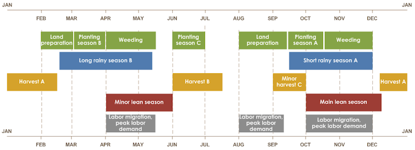
Figure: Agricultural Calendar – Rwanda
Rwanda is currently in the Crop Growing phase of Season B for the period February to July 2026. The main harvest for beans, maize, and rice is anticipated to start in June and conclude by July, marking the upcoming transition from crop development to harvest.
Regional Crop Conditions Summary
All regions exhibit stable trends across beans, maize, and rice for April 2026. Beans show positive yield anomalies ranging from 19.5% in Iburasirazuba up to a notably high 90.39% in Umujyi Wa Kigali. Maize displays slightly negative to near neutral anomalies, with the most negative in Umujyi Wa Kigali at -6.25%. Rice conditions are favorable with strong positive anomalies, especially in Iburengerazuba (75.26%) and Amajyepfo (73.38%). No regions report poor or watch flags, but the exceptionally high bean yield anomaly in Umujyi Wa Kigali stands out as an extreme positive deviation.
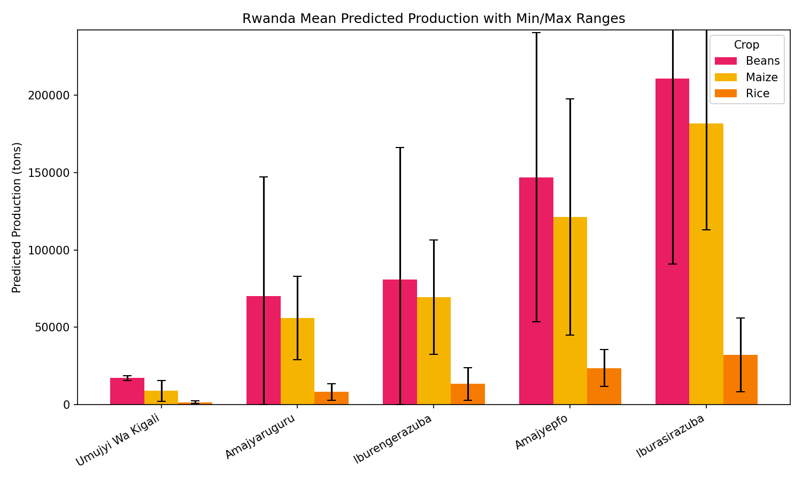
Figure: Mean Predicted Production with Min/Max – Rwanda (Part 1)
Bar chart showing mean predicted production for maize, beans, and rice with min/max ranges.
Rice Maps

Regional Rice Yield Forecasts
In April 2026, Rwanda's rice yield prediction shows Iburengerazuba as the top-performing region with 2.62 MgT/ha, while Amajyaruguru in the north registers the lowest yield at 1.96 MgT/ha, indicating a significant regional yield disparity. The central and southern regions generally exhibit above-average yields around 2.3 to 2.6 MgT/ha.

Regional Rice Yield Anomaly
In April 2026, the Iburerangerazuba region shows the highest positive rice yield anomaly at 75.26 MgT/ha, while Amajyaruguru exhibits the lowest with a significant negative anomaly of 31.35 MgT/ha. Notably, negative anomalies are concentrated in the north, contrasting with predominantly positive anomalies in the south.
Beans Maps

Regional Beans Yield Forecasts
In April 2026, Umujyi Wa Kigali is predicted as the top-performing region for beans yield with 1.29 MgT/ha, while Iburengerazuba shows the lowest yield at 0.83 MgT/ha. The central region around Kigali exhibits the highest yield anomaly, indicating significantly above-average production.

Regional Beans Yield Anomaly
In April 2026, Umujyi Wa Kigali exhibits the highest positive beans yield anomaly at 90.39 MgT/ha, indicating a strong above-average performance, while regions such as Iburengerazuba and Iburasirazuba show lower positive anomalies of 23.00 MgT/ha and 19.50 MgT/ha respectively, highlighting notable regional variation across Rwanda.
Maize Maps

Regional Maize Yield Forecasts
In April 2026, Rwanda's highest maize yield prediction is in Iburengerazuba at 1.40 MgT/ha, while the lowest is in Umujyi Wa Kigali at 1.31 MgT/ha, marking a clear regional yield disparity with the urban area showing below-average performance.

Regional Maize Yield Anomaly
In April 2026, Rwanda's Umujyi Wa Kigali region experienced the largest negative maize yield anomaly at -6.25 MgT/ha, indicating a significant below-average yield. Conversely, Iburengerazuba showed a slight positive anomaly at 0.24 MgT/ha, indicating above-average maize yield.
Production Narrative
The largest production areas are for beans in Iburasirazuba (259,944 ha, mean production 210,555 tons) and Amajyepfo (174,919 ha, 146,932 tons). Maize top producers are Iburasirazuba (132,579 ha, 181,633 tons) and Amajyepfo (89,213 ha, 121,330 tons). Rice production is smaller in area but shows high yield efficiencies, with Iburasirazuba producing 32,068 tons and Amajyepfo 23,680 tons on more limited areas. Beans lead overall production volumes due to extensive area coverage and decent yields. Trends across all crops remain stable with some uncertainty indicated by yield standard errors but no alarming volatility.
Kenya
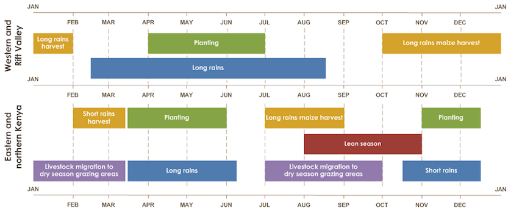
Figure: Agricultural Calendar – Kenya
Kenya is currently in the long rains growing season spanning February to August, with April marking the mid-planting and early development phase. Harvest is expected to start from July through August in most counties. The focus remains on monitoring crop growth with an eye towards stable production outcomes as the season progresses.
Regional Crop Conditions Summary
Bean crop conditions remain largely stable across Kenya, with most regions showing positive or slightly negative yield anomalies; notable positive anomalies include Bomet at +17.0 and Bungoma at +19.6 while Mandera and Wajir report significant negative anomalies of -17.2 and -18.7 respectively. Maize also presents a stable trend overall but demonstrates regional contrasts—highest predicted yields are strong in Uasin Gishu (4.57 Mg/ha) and Trans Nzoia (4.32 Mg/ha), however, Kajiado shows an extremely high yield anomaly of +94.5 indicating potential model uncertainty or atypical conditions. Rice conditions remain stable with mostly positive yield anomalies, particularly in Migori (+89.9), Siaya (+99.3), and Bungoma (+74.5), while some arid counties such as Turkana and Mandera experience negative anomalies approaching -23.1 and -18.5, respectively. There are no alarming trends in production stability, although areas with extreme anomalies may require close monitoring.
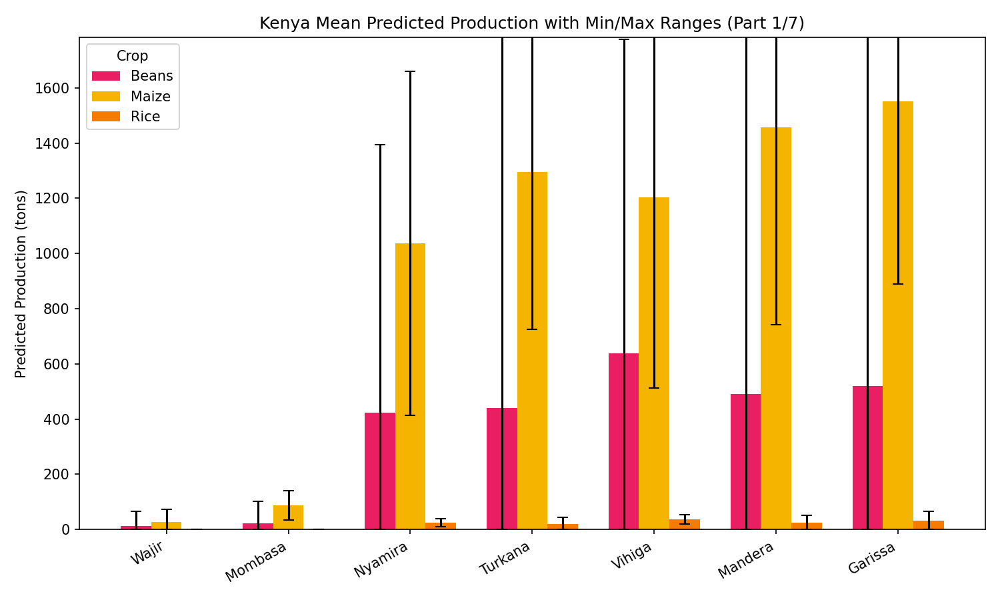
Figure: Mean Predicted Production with Min/Max – Kenya (Part 1)
Bar chart showing mean predicted production for maize, beans, and rice with min/max ranges.
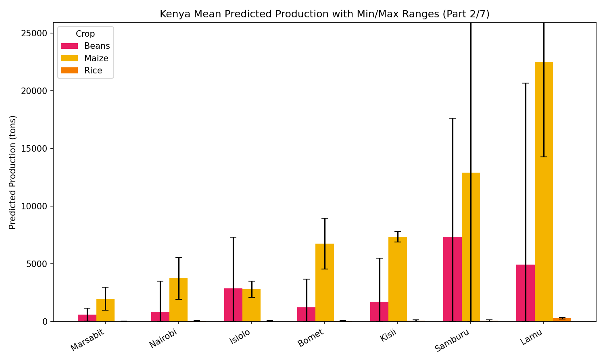
Figure: Mean Predicted Production with Min/Max – Kenya (Part 2)
Bar chart showing mean predicted production for maize, beans, and rice with min/max ranges.
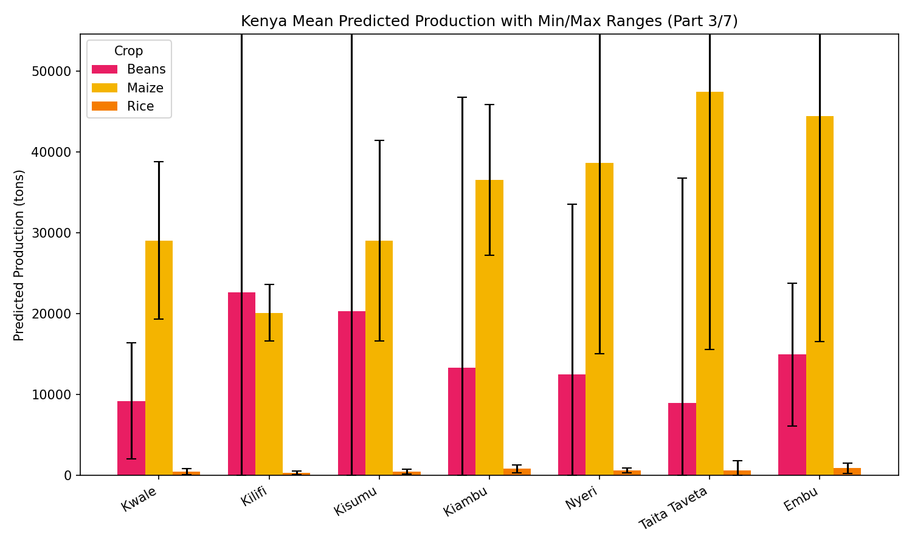
Figure: Mean Predicted Production with Min/Max – Kenya (Part 3)
Bar chart showing mean predicted production for maize, beans, and rice with min/max ranges.
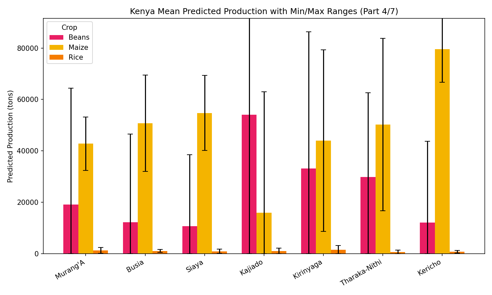
Figure: Mean Predicted Production with Min/Max – Kenya (Part 4)
Bar chart showing mean predicted production for maize, beans, and rice with min/max ranges.
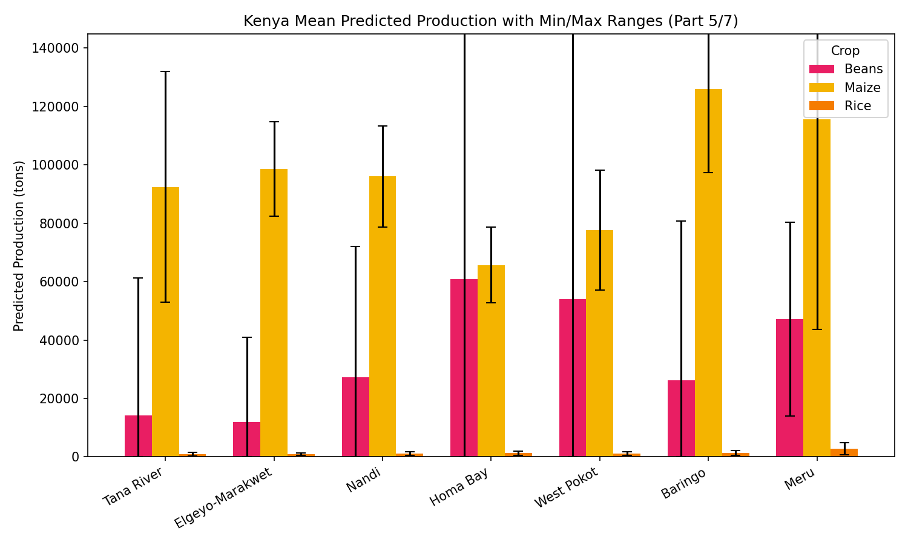
Figure: Mean Predicted Production with Min/Max – Kenya (Part 5)
Bar chart showing mean predicted production for maize, beans, and rice with min/max ranges.
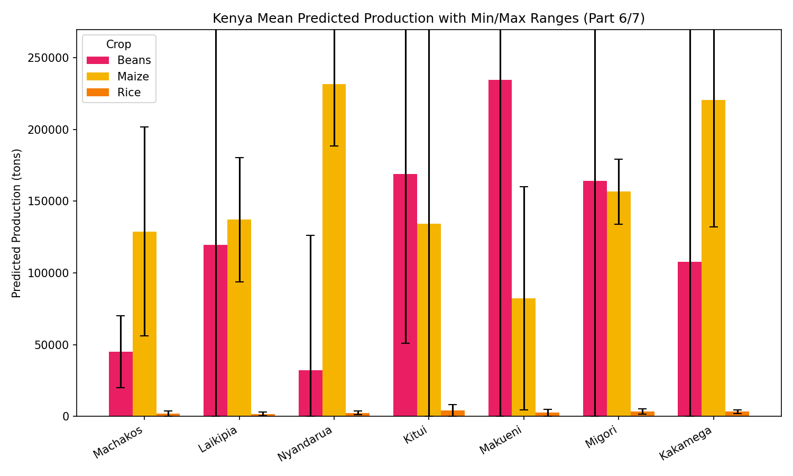
Figure: Mean Predicted Production with Min/Max – Kenya (Part 6)
Bar chart showing mean predicted production for maize, beans, and rice with min/max ranges.
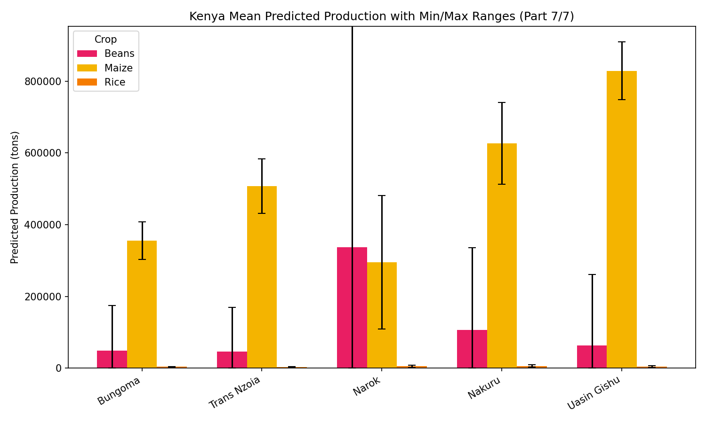
Figure: Mean Predicted Production with Min/Max – Kenya (Part 7)
Bar chart showing mean predicted production for maize, beans, and rice with min/max ranges.
Rice Maps
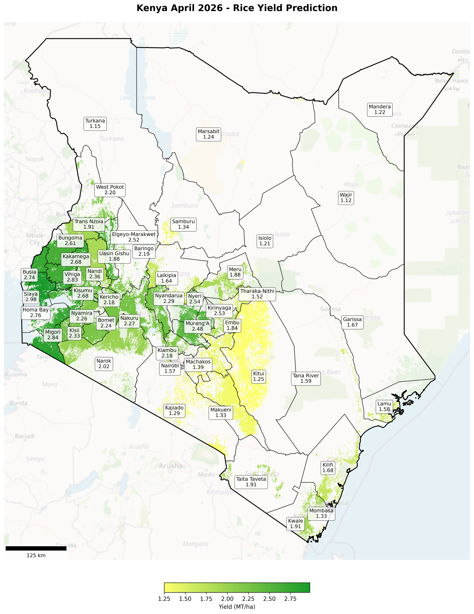
Regional Rice Yield Forecasts
In April 2026, Siaya is the top-performing region in Kenya with a predicted rice yield of 2.98 MgT/ha, while Wajir has the lowest yield at 1.12 MgT/ha, indicating a significant north-to-west yield gradient. Most high yields cluster in the western regions, highlighted by dark green, with eastern areas showing notably lower yields in yellow.
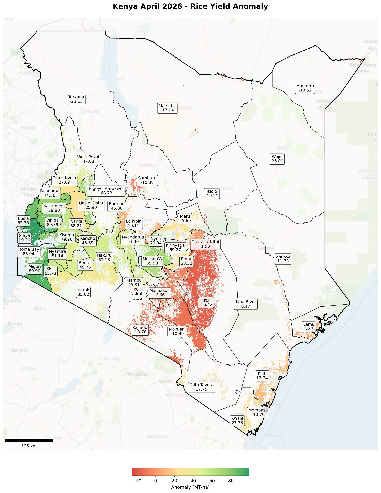
Regional Rice Yield Anomaly
In April 2026, Siaya recorded the highest positive rice yield anomaly of 99.30 MgT/ha, while Wajir showed the lowest with a -25.09 MgT/ha negative anomaly, indicating significant regional disparities in rice production across Kenya.
Beans Maps
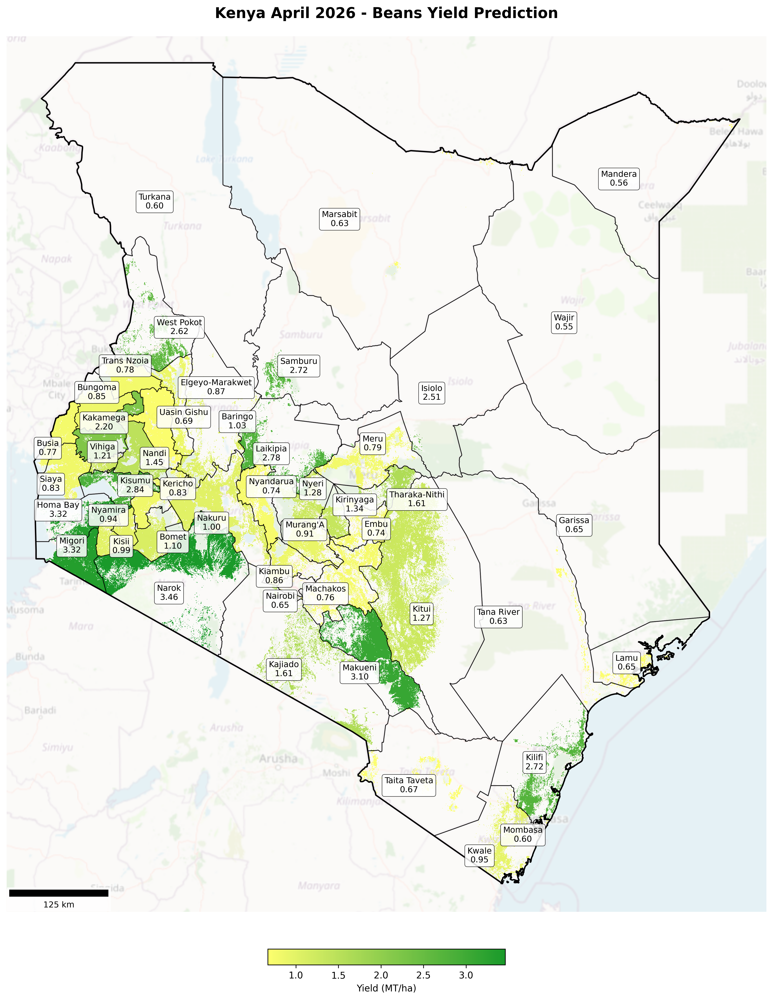
Regional Beans Yield Forecasts
In April 2026, Narok shows the highest predicted beans yield in Kenya at 3.46 MgT/ha, while Wajir registers one of the lowest yields at 0.55 MgT/ha, indicating significant regional disparities. The southwestern region generally exhibits above-average yields, with other high performers including Homa Bay and Migori at 3.32 MgT/ha.
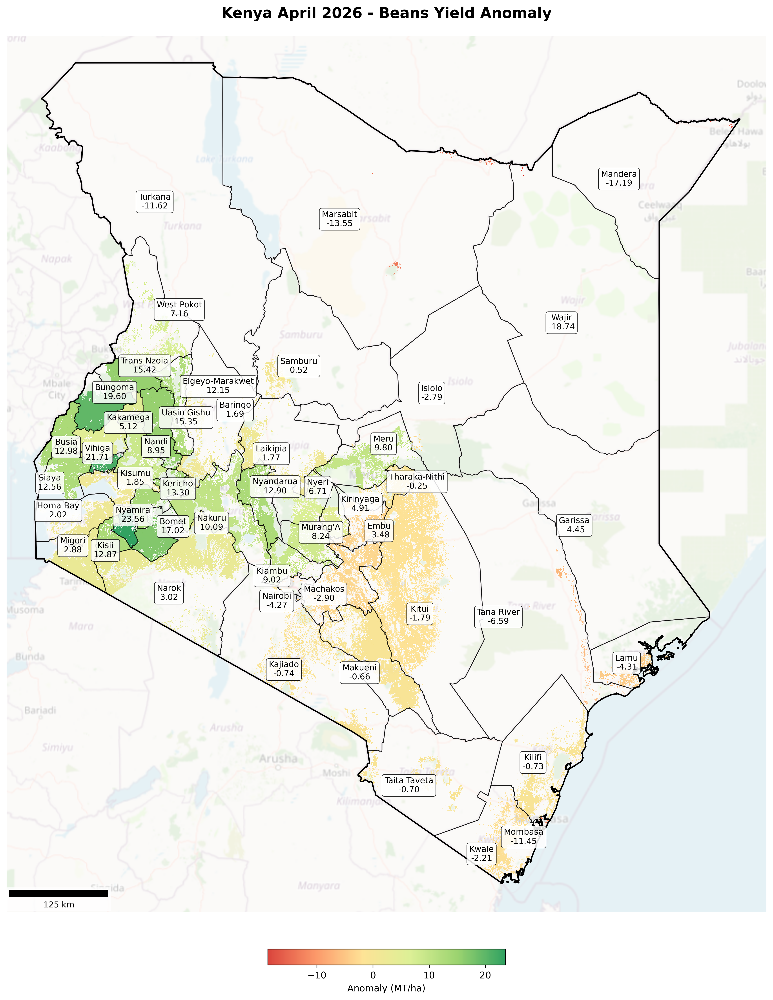
Regional Beans Yield Anomaly
In April 2026, Kenya's top bean yield anomaly was in Nyamira with +23.56 MgT/ha, indicating significantly above-average production, while the lowest was in Wajir at -18.74 MgT/ha, showing a severe negative anomaly. The extremes highlight a stark contrast between strong yields in the west and poor performance in the northeastern regions.
Maize Maps
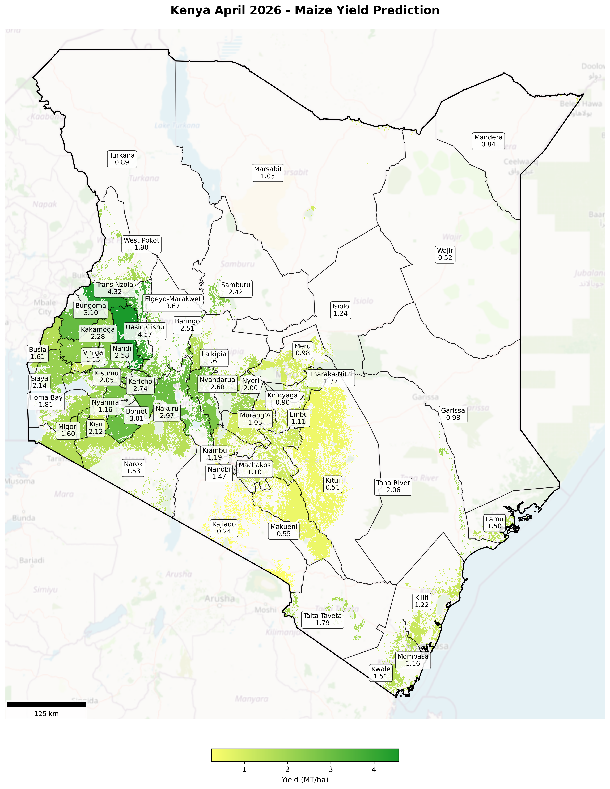
Regional Maize Yield Forecasts
In April 2026, Trans-Nzoia is predicted to have the highest maize yield in Kenya at 4.32 MgT/ha, with Uasin Gishu also performing strongly at 4.57 MgT/ha. Kajiado shows the lowest yield at 0.24 MgT/ha, indicating a significant regional disparity in maize production.
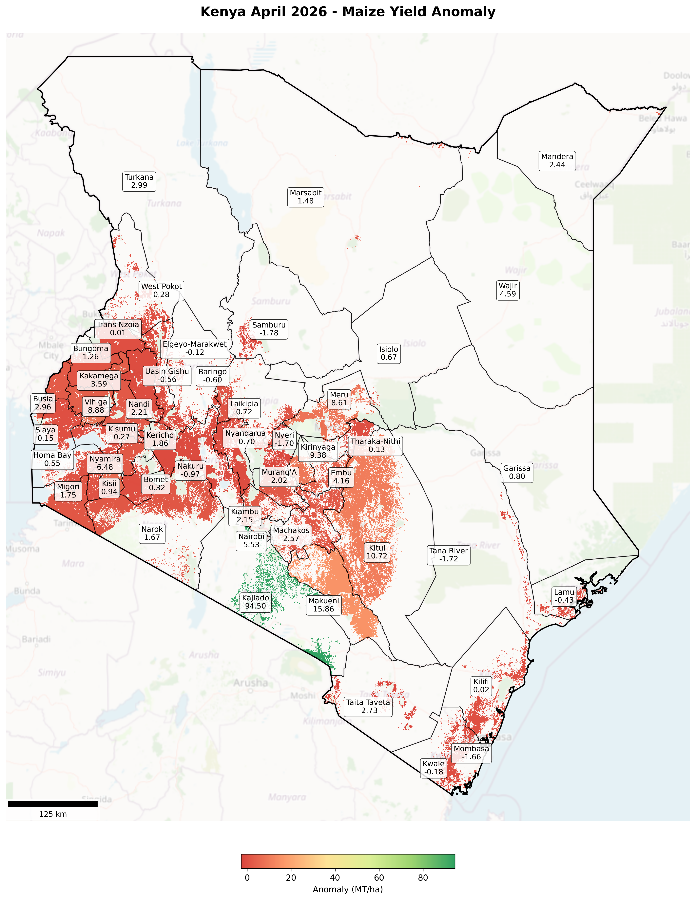
Regional Maize Yield Anomaly
In April 2026, Kajiado exhibited the highest positive maize yield anomaly at 94.50 MgT/ha, indicating significantly above-average performance, while Taita Taveta showed the largest negative anomaly at -2.73 MgT/ha, reflecting below-average yields. Most regions experienced moderate positive anomalies ranging from 0.01 to 15.86 MgT/ha.
Production Narrative
The bean crop covers substantial areas especially in Kitui (132,905 ha), Narok (97,411 ha), and Makueni (75,593 ha) with mean predicted productions of 168,789, 337,042, and 234,338 tons respectively. Maize production leads in scale, with largest production volumes forecasted in Nakuru (mean 626,818 tons), Uasin Gishu (828,815 tons), and Narok (294,901 tons) from areas spanning 211,050 ha to 192,746 ha. Rice has smaller production areas but significant yield, particularly in Migori (mean 3,485 tons from 1,227 ha) and Bungoma (3,753 tons from 1,438 ha), with consistent stable trends. Overall, maize is the top-performing crop by volume and area, followed by beans and rice. Trends are stable across crops, though yield anomalies in certain counties suggest localized uncertainties that will require ongoing assessment as the season advances.
Uganda

Figure: Agricultural Calendar – Uganda
Uganda is currently in the first harvest season of the bimodal agricultural calendar, which runs from March to July. The prediction month is April 2026, with harvest expected to begin in June and continue through July. This marks the active crop growth period with peak harvesting approaching in two months.
Regional Crop Conditions Summary
Crop conditions for April 2026 are stable across beans, maize, and rice in all regions. Beans show favorable to exceptional yield anomalies, particularly in the Western region with a high anomaly of 170.568%, indicating very strong performance, while the Northern region also shows an outstanding anomaly at 137.961%. Maize yield anomalies are positive but moderate, ranging from 20.496% in Central to 30.644% in Western regions, reflecting stable but less dramatic improvement. Rice conditions are uniformly stable with moderate positive yield anomalies, highest in the Eastern region at 56.705%. There are no poor conditions reported; watch status is not evident with all regions showing stable trends. The largest anomalies in beans suggest localized exceptional production potential that demands monitoring.
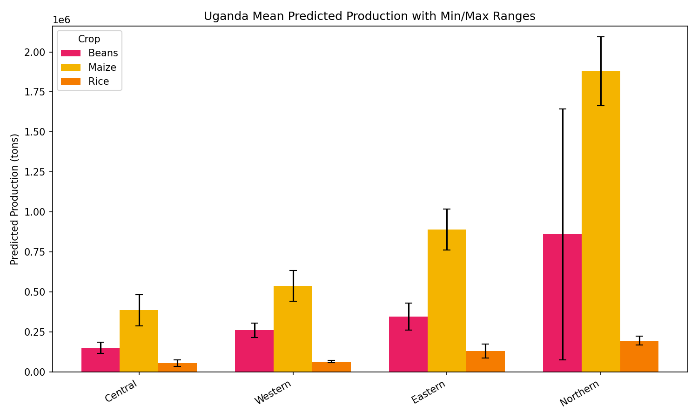
Figure: Mean Predicted Production with Min/Max – Uganda (Part 1)
Bar chart showing mean predicted production for maize, beans, and rice with min/max ranges.
Rice Maps
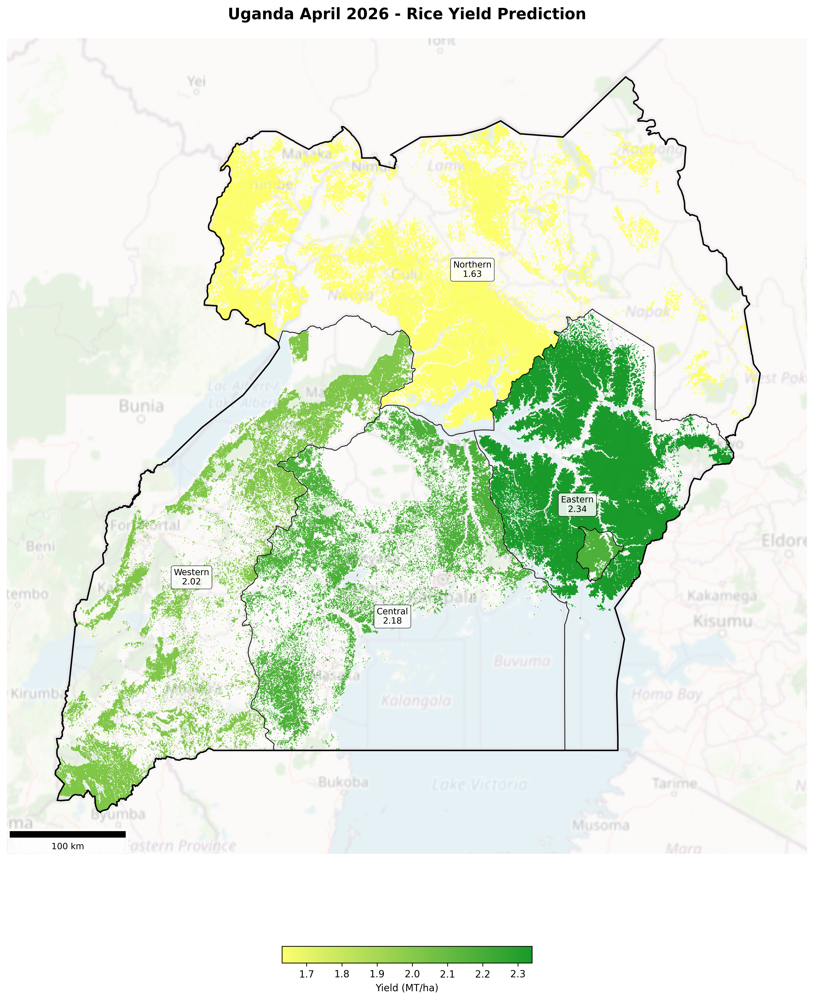
Regional Rice Yield Forecasts
In April 2026, Uganda's rice yield is predicted to be highest in the Eastern region at 2.34 MgT/ha, while the Northern region shows the lowest yield at 1.63 MgT/ha, indicating a significant regional disparity with the north performing below 1.7 MgT/ha.
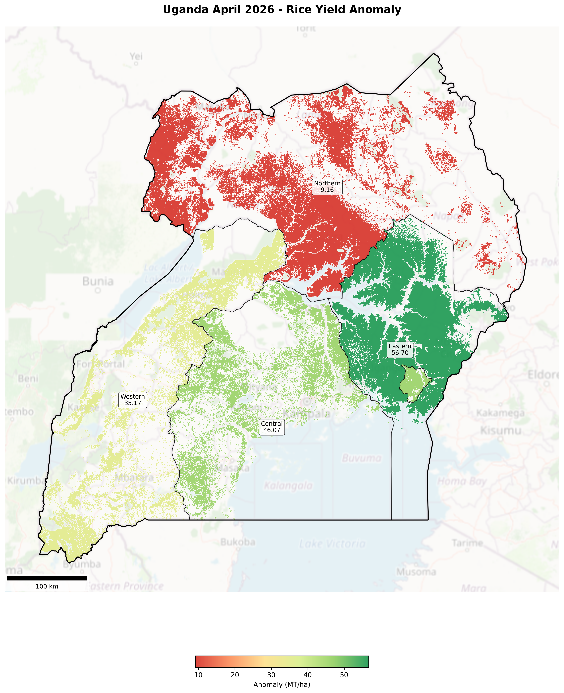
Regional Rice Yield Anomaly
In April 2026, the Eastern region of Uganda shows the highest positive rice yield anomaly at 56.70 MgT/ha, while the Northern region exhibits the lowest performance with a negative anomaly of 9.16 MgT/ha. The map highlights a stark contrast between above-average yields in the southeast and below-average yields in the north.
Beans Maps
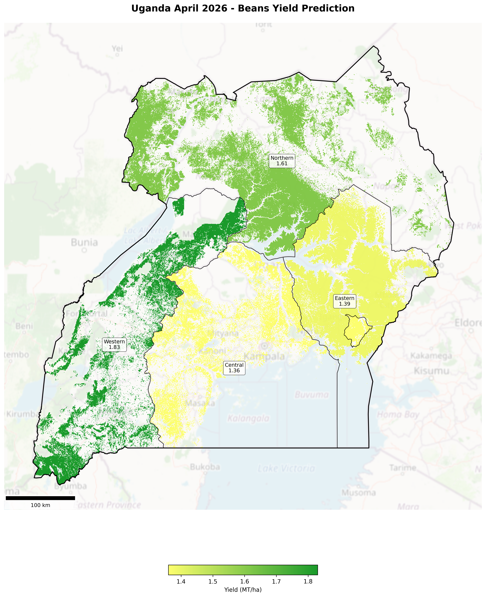
Regional Beans Yield Forecasts
In April 2026, Uganda's Western region is the top performer in beans yield prediction at 1.83 MgT/ha, while the Central region shows the lowest yield at 1.36 MgT/ha, indicating a notable regional disparity in production. The map highlights a gradient from higher yields in the west to lower yields in the central and eastern areas.
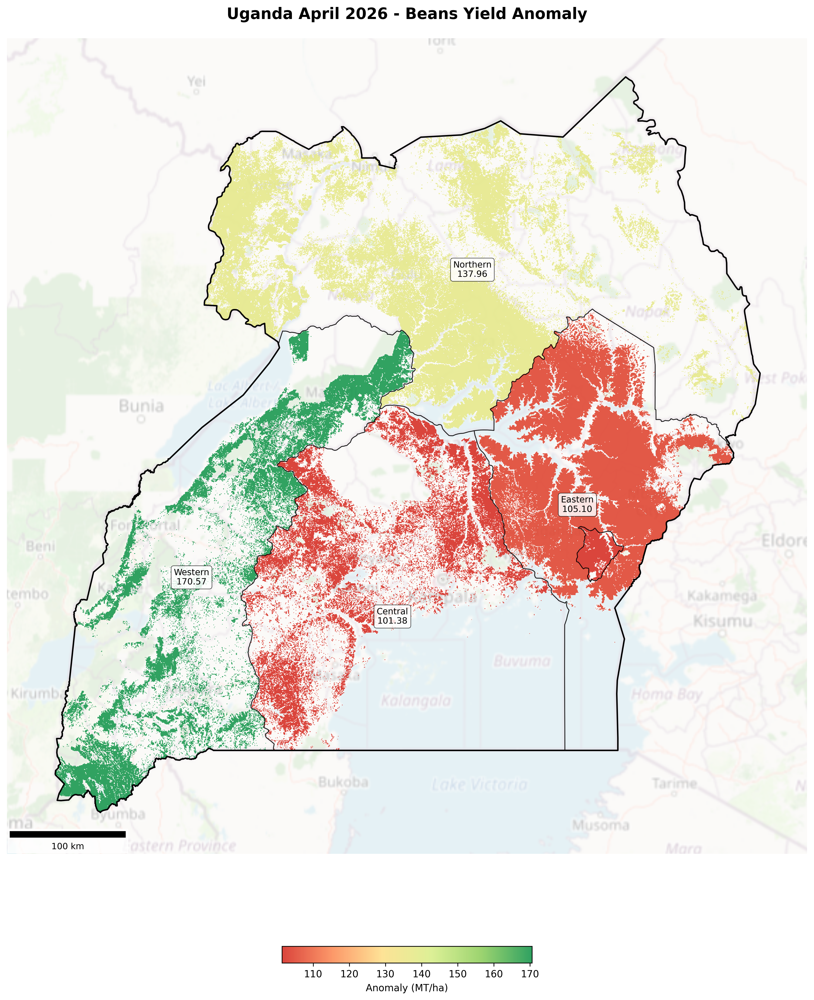
Regional Beans Yield Anomaly
In April 2026, Western Uganda shows the highest positive beans yield anomaly at 170.57 MgT/ha, while Central Uganda exhibits the lowest performance with a negative anomaly of 101.38 MgT/ha, highlighting significant regional variation in yield.
Maize Maps
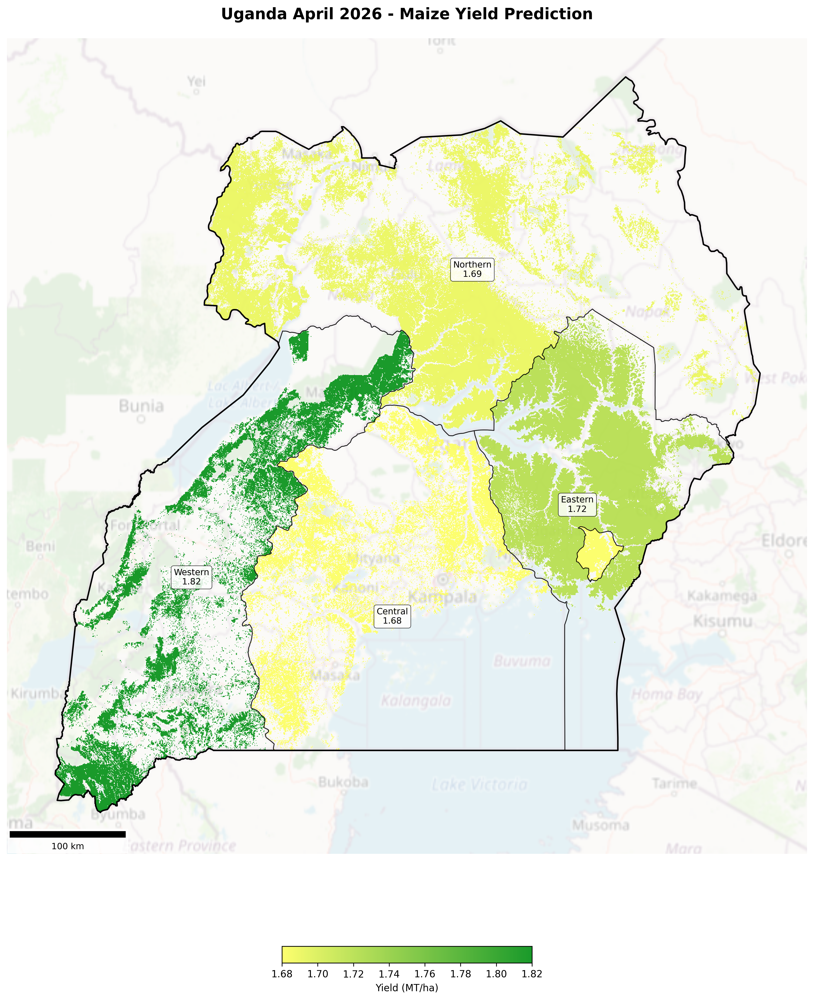
Regional Maize Yield Forecasts
In April 2026, Western Uganda shows the highest maize yield prediction at 1.82 MgT/ha, while Central Uganda has the lowest at 1.68 MgT/ha, indicating a subtle regional gradient from below to above average yields across the country.
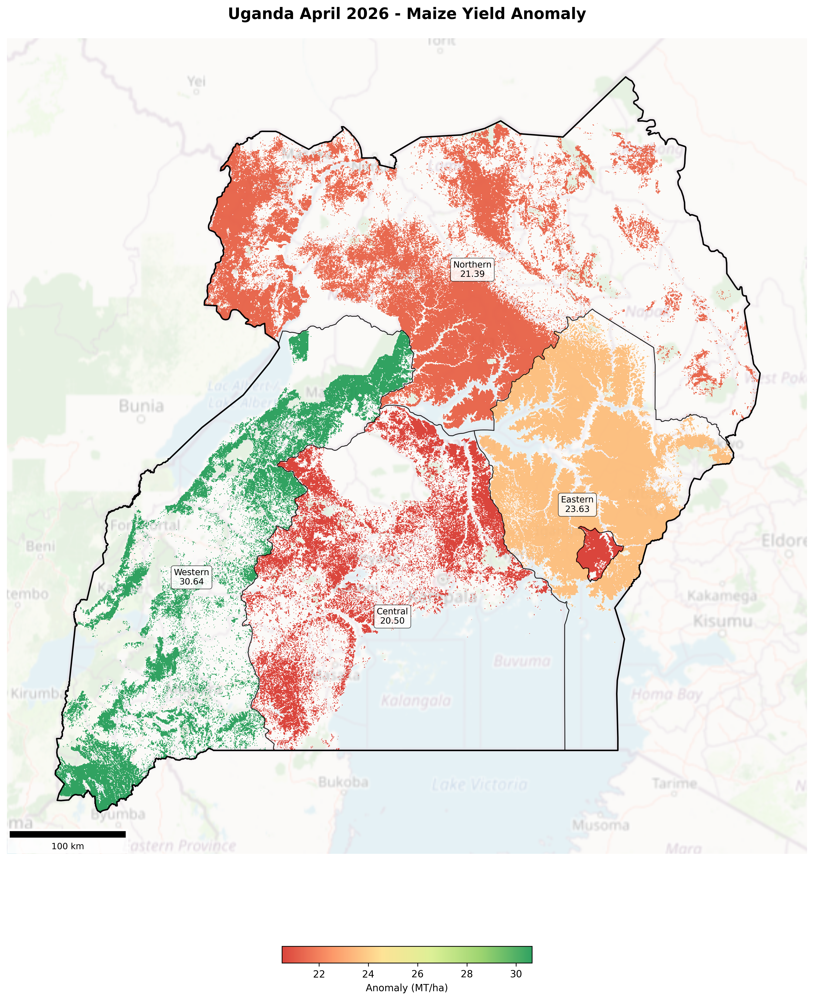
Regional Maize Yield Anomaly
In April 2026, Western Uganda shows the highest positive maize yield anomaly at 30.64 MgT/ha, while Northern and Central regions reflect significant negative anomalies around 21.39 and 20.50 MgT/ha respectively, indicating notable below-average yields.
Production Narrative
The total production area varies by crop and region, with maize covering the largest area, especially in Northern Uganda at 1,112,239 hectares, followed by beans at 533,916 in the same region, and rice with smaller cultivated areas around 119,279 hectares in Northern Uganda. The top-performing crop by production volume is maize, with Northern Uganda forecast to produce a mean of 1,879,684 tons, followed by Eastern at 889,985 tons and Central at 384,742 tons. Beans show substantial production potential particularly in Northern Uganda with mean production of 859,605 tons and Eastern at 345,258 tons. Rice production is highest in Eastern Uganda at 129,847 tons, closely followed by Northern at 194,425 tons and Central at 53,539 tons. Production trends are stable without significant uncertainty, though the high standard error in bean yield in the Northern region (1.148) indicates some variability risk that should be considered in planning.
Malawi

Figure: Agricultural Calendar – Malawi
Malawi is currently in the winter planting season which started in April, with harvest expected from September through November. This period follows the main rainy season and prepares for the winter harvest window in the latter part of the year.
Regional Crop Conditions Summary
Crop conditions for April 2026 show overall improvement and favorable trends across all key crops. Beans exhibit improving trends in all three regions with notably high positive yield anomalies, especially in the Northern Region (+33.7%) and Central Region (+25.3%), indicating strong growth. Maize also shows improving trends with positive yield anomalies in all regions, highest in the Southern Region (+15.0%). Rice demonstrates the most pronounced positive anomalies, particularly in the Northern Region (+125.5%), signaling exceptional conditions. No poor ratings are observed across crops, but continued monitoring is advised due to variability in production ranges, particularly for rice.
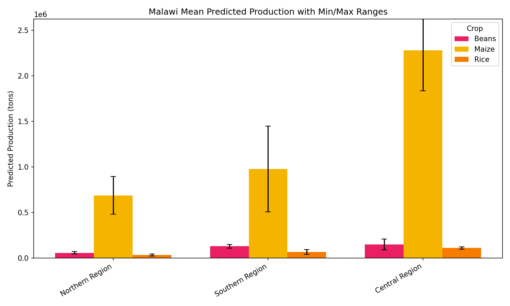
Figure: Mean Predicted Production with Min/Max – Malawi (Part 1)
Bar chart showing mean predicted production for maize, beans, and rice with min/max ranges.
Rice Maps
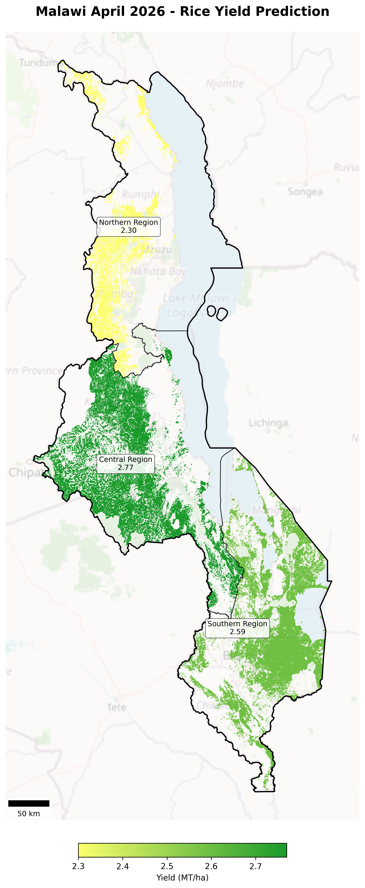
Regional Rice Yield Forecasts
In April 2026, Malawi's Central Region shows the highest rice yield prediction at 2.77 MT/ha, while the Northern Region has the lowest at 2.30 MT/ha, indicating a notable yield gradient from north to south. The Southern Region yields moderately at 2.59 MT/ha, with the Northern Region representing the extreme low end of the prediction range.
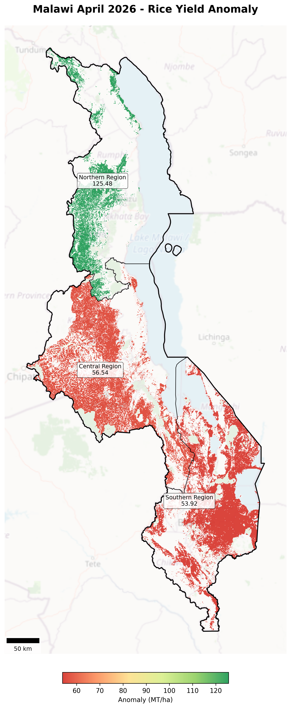
Regional Rice Yield Anomaly
In April 2026, Malawi's Northern Region shows a strong positive rice yield anomaly of 125.48 MgT/ha, while the Central and Southern Regions exhibit significant negative anomalies of 56.54 and 53.92 MgT/ha, respectively, marking a clear north-south divide in rice production performance.
Beans Maps
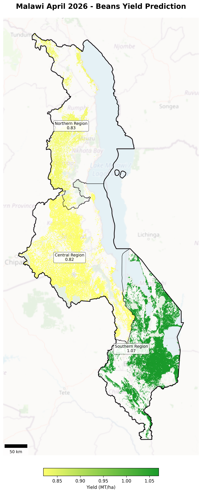
Regional Beans Yield Forecasts
In April 2026, Malawi's Southern Region is predicted to have the highest beans yield at 1.07 MT/ha, showing a positive yield anomaly, while the Northern and Central Regions have lower yields at 0.83 and 0.82 MT/ha respectively, indicated by the yellow shading representing below-average production.
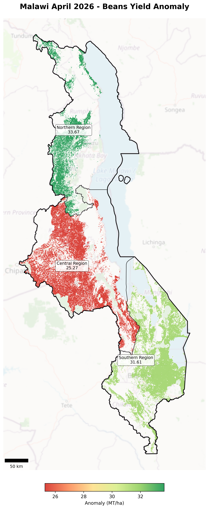
Regional Beans Yield Anomaly
In April 2026, Malawi’s Central Region exhibited the lowest bean yield anomaly around 25.27 MgT/ha, indicating a negative anomaly, while the Northern Region showed the highest positive anomaly at 33.67 MgT/ha, with the Southern Region also above average at 31.61 MgT/ha. The map highlights a strong north-south gradient in yield anomalies.
Maize Maps
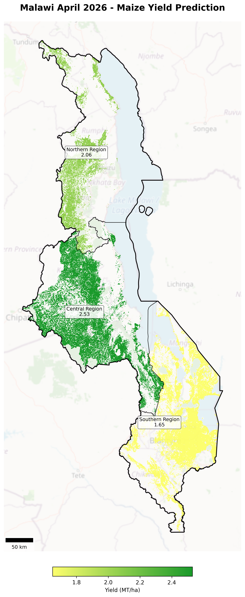
Regional Maize Yield Forecasts
The Central Region leads maize yield predictions for April 2026 with 2.53 MT/ha, while the Southern Region shows the lowest yield at 1.65 MT/ha, indicating a notable regional disparity in production across Malawi.
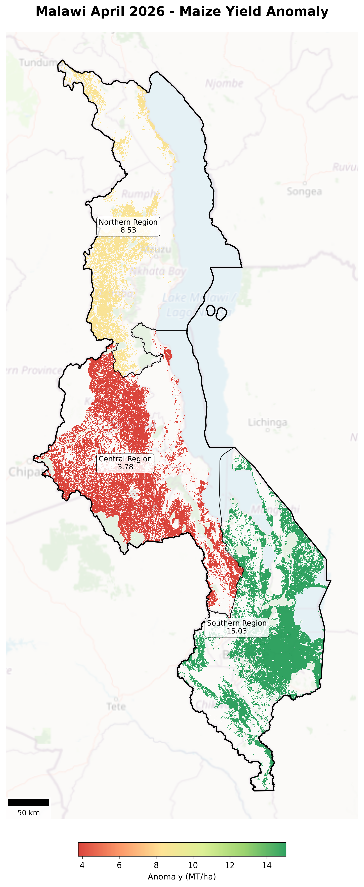
Regional Maize Yield Anomaly
In April 2026, Malawi’s Southern Region shows the highest positive maize yield anomaly at 15.03 MgT/ha, indicating above-average yields, while the Central Region exhibits the lowest anomaly at 3.78 MgT/ha, reflecting negative yield anomalies; the Northern Region stands intermediate at 8.53 MgT/ha.
Production Narrative
For 2026, the predicted production areas highlight maize as the top-performing crop by tonnage, with the Central Region leading (mean production ~2,281,205 tons) followed by Southern (~977,066 tons) and Northern (~686,423 tons). Rice production is greatest in the Central Region with a mean forecast of 109,443 tons, then Southern (67,205 tons) and Northern (33,582 tons). Beans show lower but stable production volumes, led by the Central Region (148,698 tons), Southern (127,430 tons), and Northern (55,622 tons). Uncertainty is highest for rice as indicated by large production ranges, while beans production shows more consistency. Overall trends are improving for all crops with no immediate risks flagged.
United Republic Of Tanzania
Regional Crop Conditions Summary
Bean crop conditions remain largely stable with all regions showing stable trends and mostly positive yield anomalies during the Masika season, notably with predicted yield anomalies up to 34.99% in Pwani and 32.98% in Singida. However, Msimu season bean yields show mixed anomalies ranging from negative (-13.36% in Dodoma) to positive (19.53% in Kaskazini Pemba), but trends remain stable with no alarming signs. Maize conditions show stable trends across both seasons with modest yield anomalies; the Masika season features positive anomalies such as Manyara (6.42%) and Rukwa (5.99%), though some coastal and island areas like Dar Es Salaam and Kusini Unguja show slightly negative anomalies (e.g., -8.64% in Dar Es Salaam Msimu). Rice exhibits strong positive yield anomalies in the Masika season, with the highest anomalies recorded in Njombe (67.81%), Iringa (64.88%), and Rukwa (60.82%), indicating very favourable growing conditions. Conversely, rice anomalies in the Msimu season range widely with some coastal and island regions experiencing negative anomalies, such as Songwe (-29.77%) and Pwani (-18.77%), but trends are stable overall. No critical warnings are flagged; however, anomaly variability and some negative anomalies in unimodal regions call for continued monitoring.

Figure: Mean Predicted Production with Min/Max – United Republic Of Tanzania (Part 1)
Bar chart showing mean predicted production for maize, beans, and rice with min/max ranges.

Figure: Mean Predicted Production with Min/Max – United Republic Of Tanzania (Part 2)
Bar chart showing mean predicted production for maize, beans, and rice with min/max ranges.

Figure: Mean Predicted Production with Min/Max – United Republic Of Tanzania (Part 3)
Bar chart showing mean predicted production for maize, beans, and rice with min/max ranges.

Figure: Mean Predicted Production with Min/Max – United Republic Of Tanzania (Part 4)
Bar chart showing mean predicted production for maize, beans, and rice with min/max ranges.

Figure: Mean Predicted Production with Min/Max – United Republic Of Tanzania (Part 5)
Bar chart showing mean predicted production for maize, beans, and rice with min/max ranges.
Rice Maps — Masika

Regional Rice Yield Forecasts — Masika
In April 2026, Njombe leads Tanzania's Masika rice yield prediction at 2.51 MgT/ha, while Kaskazini Pemba shows the lowest yield at 1.63 MgT/ha, indicating a notable regional disparity in productivity.

Regional Rice Yield Anomaly — Masika
In April 2026, Tanzania's rice yield anomalies show highest positive deviations in Njombe (67.81 MgT/ha) and Rukwa (60.82 MgT/ha), while Kaskazini Pemba (8.95 MgT/ha) records the lowest, indicating a significant negative anomaly in the northeastern region. Overall, northern and southern regions exhibit above-average yields, contrasting with below-average yields in central to eastern areas.
Rice Maps — Msimu

Regional Rice Yield Forecasts — Msimu
In April 2026, Tanzania's highest rice yield prediction for the Msimu season is in Kagera at 1.98 MT/ha, while the lowest is in Songwe at 1.05 MT/ha, indicating significant regional variation in yield potential. The northwestern regions generally show above-average yields near 1.9 MT/ha, contrasting with southern areas trending below 1.2 MT/ha.

Regional Rice Yield Anomaly — Msimu
In April 2026, the United Republic of Tanzania's rice yield anomaly shows the highest positive anomaly in Kagera at +32.57 MgT/ha, while Songwe experiences the largest negative anomaly at -29.77 MgT/ha, indicating significant regional disparities in rice production for the Msimu season.
Beans Maps — Masika

Regional Beans Yield Forecasts — Masika
In April 2026, the highest predicted beans yield in Tanzania's Masika season is in Pwani at 0.91 MgT/ha, while Dodoma and Geita show the lowest yields at 0.80 MgT/ha, indicating a notable yield variation across regions.

Regional Beans Yield Anomaly — Masika
In April 2026, Tanzania's beans yield anomaly shows Pwani as the top-performing region with an anomaly of 34.99 MgT/ha, while Dodoma exhibits the lowest yield anomaly at 17.82 MgT/ha, indicating a significant negative anomaly in the central region.
Beans Maps — Msimu

Regional Beans Yield Forecasts — Msimu
In April 2026, Kusini Pemba (0.83 MgT/ha) and Kaskazini Pemba (0.81 MgT/ha) are predicted to have the highest bean yields in Tanzania, while Dodoma shows the lowest yield at 0.59 MgT/ha, indicating a notable yield deficit in central regions.

Regional Beans Yield Anomaly — Msimu
In April 2026, Kusini Pemba shows the highest positive beans yield anomaly at 22.53 MgT/ha, while Dodoma records the largest negative anomaly of -13.36 MgT/ha, indicating significant regional disparities in Tanzania's Msimu season bean production.
Maize Maps — Masika

Regional Maize Yield Forecasts — Masika
In April 2026, Manyara and Rukwa regions are the top performers with maize yield predictions of 1.48 MgT/ha, while Kusini Unguja has the lowest at 1.36 MgT/ha. The map shows a general yield range from 1.36 to 1.48 MgT/ha, with Northern and Western regions exhibiting higher productivity.

Regional Maize Yield Anomaly — Masika
In April 2026, the Tanzania Masika maize yield anomaly map shows Manyara with the highest positive anomaly at 6.42 MgT/ha, while Kusini Unguja exhibits the largest negative anomaly at -2.04 MgT/ha, indicating significant regional yield disparities. Central regions like Simiyu (-0.62 MgT/ha) and Shinyanga (-0.46 MgT/ha) also experience below-average yields.
Maize Maps — Msimu

Regional Maize Yield Forecasts — Msimu
In April 2026, Tanzania’s maize yield prediction shows highest performance in Songwe at 1.50 MgT/ha, with several southern regions like Mbeya and Rukwa also above 1.45 MgT/ha. Northern and central regions such as Simiyu and Shinyanga exhibit lower yields around 1.28–1.30 MgT/ha, indicating notable regional variability.

Regional Maize Yield Anomaly — Msimu
In April 2026, Tanzania's maize yield anomaly shows Songwe as the top performing region with an above-average yield anomaly of +7.49 MgT/ha, while Dar Es Salaam experiences the most severe negative anomaly at -8.64 MgT/ha, indicating significant below-average maize yields.
Production Narrative
Production area varies by crop and region in 2026. For beans in Masika, the largest forecasted mean productions are in Tabora (34,724 tons), Dodoma (18,803 tons), and Simiyu (16,528 tons), whereas in the Msimu season, Tabora again leads with 28,110 tons. Maize leads as the top-performing crop by production, with Masika season regions Tabora (411,148 tons), Dodoma (240,401 tons), and Rukwa (165,322 tons) showing the highest mean predicted productions. In the unimodal Msimu season, production remains substantial with Tabora (379,072 tons), Dodoma (222,164 tons), and Mbeya (140,046 tons) as major contributors. Rice production in Masika is strongest in Dodoma (56,776 tons), Tabora (100,897 tons), and Rukwa (47,818 tons), while Msimu season rice production is comparatively lower, led by Tabora (69,692 tons) and Dodoma (38,738 tons). Despite generally stable trends, some regions show high production uncertainty, evidenced by wide ranges between minimum and maximum predicted yields, notably in Katavi and Songwe for beans and rice, which suggests localized variability in crop outcomes.
Regional Production Forecast Tables
Rwanda – Regional Production Table
| Crop | Region | Predicted Yield (MT/ha) | Yield Anomaly | Min–Max Production (tons) | Condition |
|---|---|---|---|---|---|
| Beans | Amajyaruguru | 0.88 | 30.19 | 0.0 – 147174.0 | Exceptional |
| Beans | Amajyepfo | 0.84 | 24.424 | 53567.0 – 240297.0 | Exceptional |
| Beans | Iburasirazuba | 0.81 | 19.502 | 90772.0 – 330337.0 | Exceptional |
| Beans | Iburengerazuba | 0.83 | 23.004 | 0.0 – 166072.0 | Exceptional |
| Beans | Umujyi Wa Kigali | 1.29 | 90.387 | 15728.0 – 18700.0 | Exceptional |
| Maize | Amajyaruguru | 1.38 | -0.846 | 28982.0 – 82988.0 | Poor |
| Maize | Amajyepfo | 1.36 | -2.029 | 44935.0 – 197725.0 | Poor |
| Maize | Iburasirazuba | 1.37 | -1.403 | 113074.0 – 250192.0 | Poor |
| Maize | Iburengerazuba | 1.4 | 0.242 | 32571.0 – 106382.0 | Favorable |
| Maize | Umujyi Wa Kigali | 1.31 | -6.245 | 2138.0 – 15694.0 | Poor |
| Rice | Amajyaruguru | 1.96 | 31.349 | 2843.0 – 13453.0 | Exceptional |
| Rice | Amajyepfo | 2.59 | 73.384 | 11825.0 – 35536.0 | Exceptional |
| Rice | Iburasirazuba | 2.36 | 57.935 | 8275.0 – 55861.0 | Exceptional |
| Rice | Iburengerazuba | 2.62 | 75.264 | 2825.0 – 23826.0 | Exceptional |
| Rice | Umujyi Wa Kigali | 2.16 | 44.868 | 603.0 – 2408.0 | Exceptional |
Kenya – Regional Production Table
| Crop | Region | Predicted Yield (MT/ha) | Yield Anomaly | Min–Max Production (tons) | Condition |
|---|---|---|---|---|---|
| Beans | Baringo | 1.03 | 1.693 | 0.0 – 80694.0 | Exceptional |
| Beans | Bomet | 1.1 | 17.017 | 0.0 – 3692.0 | Exceptional |
| Beans | Bungoma | 0.85 | 19.6 | 0.0 – 174040.0 | Exceptional |
| Beans | Busia | 0.77 | 12.984 | 0.0 – 46536.0 | Exceptional |
| Beans | Elgeyo-Marakwet | 0.87 | 12.146 | 0.0 – 41031.0 | Exceptional |
| Beans | Embu | 0.74 | -3.481 | 6106.0 – 23795.0 | Poor |
| Beans | Garissa | 0.65 | -4.451 | 0.0 – 1934.0 | Poor |
| Beans | Homa Bay | 3.32 | 2.022 | 0.0 – 207060.0 | Exceptional |
| Beans | Isiolo | 2.51 | -2.786 | 0.0 – 7322.0 | Poor |
| Beans | Kajiado | 1.61 | -0.742 | 0.0 – 143122.0 | Poor |
| Beans | Kakamega | 2.2 | 5.123 | 0.0 – 304238.0 | Exceptional |
| Beans | Kericho | 0.83 | 13.297 | 0.0 – 43796.0 | Exceptional |
| Beans | Kiambu | 0.86 | 9.021 | 0.0 – 46764.0 | Exceptional |
| Beans | Kilifi | 2.72 | -0.728 | 0.0 – 74129.0 | Poor |
| Beans | Kirinyaga | 1.34 | 4.91 | 0.0 – 86301.0 | Exceptional |
| Beans | Kisii | 0.99 | 12.869 | 0.0 – 5513.0 | Exceptional |
| Beans | Kisumu | 2.84 | 1.85 | 0.0 – 62983.0 | Exceptional |
| Beans | Kitui | 1.27 | -1.795 | 51067.0 – 286511.0 | Poor |
| Beans | Kwale | 0.95 | -2.213 | 2029.0 – 16429.0 | Poor |
| Beans | Laikipia | 2.78 | 1.771 | 0.0 – 368009.0 | Exceptional |
| Beans | Lamu | 0.65 | -4.312 | 0.0 – 20652.0 | Poor |
| Beans | Machakos | 0.76 | -2.9 | 19900.0 – 70037.0 | Poor |
| Beans | Makueni | 3.1 | -0.663 | 0.0 – 564577.0 | Poor |
| Beans | Mandera | 0.56 | -17.193 | 0.0 – 2309.0 | Poor |
| Beans | Marsabit | 0.63 | -13.552 | 50.0 – 1152.0 | Poor |
| Beans | Meru | 0.79 | 9.805 | 13909.0 – 80331.0 | Exceptional |
| Beans | Migori | 3.32 | 2.879 | 0.0 – 524423.0 | Exceptional |
| Beans | Mombasa | 0.6 | -11.445 | 0.0 – 102.0 | Poor |
| Beans | Murang'A | 0.91 | 8.243 | 0.0 – 64374.0 | Exceptional |
| Beans | Nairobi | 0.65 | -4.273 | 0.0 – 3512.0 | Poor |
| Beans | Nakuru | 1.0 | 10.085 | 0.0 – 336301.0 | Exceptional |
| Beans | Nandi | 1.45 | 8.946 | 0.0 – 71989.0 | Exceptional |
| Beans | Narok | 3.46 | 3.023 | 0.0 – 1100620.0 | Exceptional |
| Beans | Nyamira | 0.94 | 23.558 | 0.0 – 1395.0 | Exceptional |
| Beans | Nyandarua | 0.74 | 12.902 | 0.0 – 126307.0 | Exceptional |
| Beans | Nyeri | 1.28 | 6.714 | 0.0 – 33526.0 | Exceptional |
| Beans | Samburu | 2.72 | 0.521 | 0.0 – 17606.0 | Favorable |
| Beans | Siaya | 0.83 | 12.56 | 0.0 – 38561.0 | Exceptional |
| Beans | Taita Taveta | 0.67 | -0.697 | 0.0 – 36725.0 | Poor |
| Beans | Tana River | 0.63 | -6.594 | 0.0 – 61294.0 | Poor |
| Beans | Tharaka-Nithi | 1.61 | -0.254 | 0.0 – 62578.0 | Poor |
| Beans | Trans Nzoia | 0.78 | 15.423 | 0.0 – 169174.0 | Exceptional |
| Beans | Turkana | 0.6 | -11.622 | 0.0 – 1964.0 | Poor |
| Beans | Uasin Gishu | 0.69 | 15.352 | 0.0 – 260574.0 | Exceptional |
| Beans | Vihiga | 1.21 | 21.706 | 0.0 – 1776.0 | Exceptional |
| Beans | Wajir | 0.55 | -18.736 | 0.0 – 66.0 | Poor |
| Beans | West Pokot | 2.62 | 7.16 | 0.0 – 149061.0 | Exceptional |
| Maize | Baringo | 2.51 | -0.604 | 97276.0 – 154552.0 | Poor |
| Maize | Bomet | 3.01 | -0.315 | 4567.0 – 8954.0 | Poor |
| Maize | Bungoma | 3.1 | 1.265 | 303536.0 – 407461.0 | Exceptional |
| Maize | Busia | 1.61 | 2.957 | 31969.0 – 69470.0 | Exceptional |
| Maize | Elgeyo-Marakwet | 3.67 | -0.124 | 82439.0 – 114684.0 | Poor |
| Maize | Embu | 1.11 | 4.159 | 16589.0 – 72162.0 | Exceptional |
| Maize | Garissa | 0.98 | 0.799 | 890.0 – 2210.0 | Favorable |
| Maize | Homa Bay | 1.81 | 0.548 | 52706.0 – 78617.0 | Favorable |
| Maize | Isiolo | 1.24 | 0.674 | 2114.0 – 3521.0 | Favorable |
| Maize | Kajiado | 0.24 | 94.5 | 0.0 – 62949.0 | Exceptional |
| Maize | Kakamega | 2.28 | 3.59 | 132053.0 – 309155.0 | Exceptional |
| Maize | Kericho | 2.74 | 1.86 | 66662.0 – 92543.0 | Exceptional |
| Maize | Kiambu | 1.19 | 2.147 | 27230.0 – 45863.0 | Exceptional |
| Maize | Kilifi | 1.22 | 0.016 | 16636.0 – 23602.0 | Favorable |
| Maize | Kirinyaga | 0.9 | 9.38 | 8706.0 – 79292.0 | Exceptional |
| Maize | Kisii | 2.12 | 0.936 | 6896.0 – 7821.0 | Favorable |
| Maize | Kisumu | 2.05 | 0.274 | 16593.0 – 41394.0 | Favorable |
| Maize | Kitui | 0.51 | 10.722 | 0.0 – 309492.0 | Exceptional |
| Maize | Kwale | 1.51 | -0.184 | 19308.0 – 38746.0 | Poor |
| Maize | Laikipia | 1.61 | 0.72 | 93673.0 – 180394.0 | Favorable |
| Maize | Lamu | 1.5 | -0.431 | 14274.0 – 30759.0 | Poor |
| Maize | Machakos | 1.1 | 2.572 | 55953.0 – 201616.0 | Exceptional |
| Maize | Makueni | 0.55 | 15.855 | 4535.0 – 159998.0 | Exceptional |
| Maize | Mandera | 0.84 | 2.445 | 742.0 – 2172.0 | Exceptional |
| Maize | Marsabit | 1.05 | 1.476 | 999.0 – 2968.0 | Exceptional |
| Maize | Meru | 0.98 | 8.61 | 43602.0 – 187719.0 | Exceptional |
| Maize | Migori | 1.6 | 1.75 | 133769.0 – 179361.0 | Exceptional |
| Maize | Mombasa | 1.16 | -1.664 | 35.0 – 141.0 | Poor |
| Maize | Murang'A | 1.03 | 2.016 | 32454.0 – 53215.0 | Exceptional |
| Maize | Nairobi | 1.47 | 5.532 | 1942.0 – 5561.0 | Exceptional |
| Maize | Nakuru | 2.97 | -0.971 | 512277.0 – 741360.0 | Poor |
| Maize | Nandi | 2.58 | 2.209 | 78736.0 – 113325.0 | Exceptional |
| Maize | Narok | 1.53 | 1.667 | 108385.0 – 481418.0 | Exceptional |
| Maize | Nyamira | 1.16 | 6.482 | 413.0 – 1659.0 | Exceptional |
| Maize | Nyandarua | 2.68 | -0.705 | 188291.0 – 274765.0 | Poor |
| Maize | Nyeri | 2.0 | -1.704 | 15077.0 – 62223.0 | Poor |
| Maize | Samburu | 2.42 | -1.778 | 0.0 – 27606.0 | Poor |
| Maize | Siaya | 2.14 | 0.147 | 40171.0 – 69312.0 | Favorable |
| Maize | Taita Taveta | 1.79 | -2.729 | 15550.0 – 79317.0 | Poor |
| Maize | Tana River | 2.06 | -1.72 | 52930.0 – 131976.0 | Poor |
| Maize | Tharaka-Nithi | 1.37 | -0.132 | 16720.0 – 83729.0 | Poor |
| Maize | Trans Nzoia | 4.32 | 0.01 | 431126.0 – 582847.0 | Favorable |
| Maize | Turkana | 0.89 | 2.989 | 725.0 – 1865.0 | Exceptional |
| Maize | Uasin Gishu | 4.57 | -0.555 | 748262.0 – 909368.0 | Poor |
| Maize | Vihiga | 1.15 | 8.882 | 513.0 – 1892.0 | Exceptional |
| Maize | Wajir | 0.52 | 4.595 | 0.0 – 73.0 | Exceptional |
| Maize | West Pokot | 1.9 | 0.276 | 57025.0 – 98094.0 | Favorable |
| Rice | Baringo | 2.19 | 46.875 | 575.0 – 2180.0 | Exceptional |
| Rice | Bomet | 2.24 | 49.76 | 27.0 – 98.0 | Exceptional |
| Rice | Bungoma | 2.61 | 74.498 | 2813.0 – 4694.0 | Exceptional |
| Rice | Busia | 2.74 | 83.383 | 523.0 – 1641.0 | Exceptional |
| Rice | Elgeyo-Marakwet | 2.52 | 68.725 | 418.0 – 1276.0 | Exceptional |
| Rice | Embu | 1.84 | 23.325 | 282.0 – 1561.0 | Exceptional |
| Rice | Garissa | 1.67 | 11.726 | 0.0 – 67.0 | Exceptional |
| Rice | Homa Bay | 2.76 | 85.039 | 598.0 – 1908.0 | Exceptional |
| Rice | Isiolo | 1.21 | -19.208 | 0.0 – 70.0 | Poor |
| Rice | Kajiado | 1.29 | -13.783 | 12.0 – 2140.0 | Poor |
| Rice | Kakamega | 2.68 | 79.795 | 2003.0 – 4499.0 | Exceptional |
| Rice | Kericho | 2.18 | 45.691 | 329.0 – 1258.0 | Exceptional |
| Rice | Kiambu | 2.18 | 45.813 | 348.0 – 1331.0 | Exceptional |
| Rice | Kilifi | 1.68 | 12.742 | 99.0 – 593.0 | Exceptional |
| Rice | Kirinyaga | 2.53 | 69.267 | 0.0 – 3211.0 | Exceptional |
| Rice | Kisii | 2.33 | 55.731 | 45.0 – 155.0 | Exceptional |
| Rice | Kisumu | 2.68 | 79.201 | 166.0 – 782.0 | Exceptional |
| Rice | Kitui | 1.25 | -16.424 | 0.0 – 8331.0 | Poor |
| Rice | Kwale | 1.91 | 27.728 | 80.0 – 841.0 | Exceptional |
| Rice | Laikipia | 1.64 | 10.111 | 388.0 – 3112.0 | Exceptional |
| Rice | Lamu | 1.58 | 5.867 | 231.0 – 363.0 | Exceptional |
| Rice | Machakos | 1.39 | -6.662 | 167.0 – 3914.0 | Poor |
| Rice | Makueni | 1.33 | -10.894 | 101.0 – 4887.0 | Poor |
| Rice | Mandera | 1.22 | -18.517 | 0.0 – 52.0 | Poor |
| Rice | Marsabit | 1.24 | -17.044 | 0.0 – 58.0 | Poor |
| Rice | Meru | 1.88 | 25.601 | 727.0 – 4838.0 | Exceptional |
| Rice | Migori | 2.84 | 89.903 | 1633.0 – 5336.0 | Exceptional |
| Rice | Mombasa | 1.33 | -10.791 | 0.0 – 0.0 | Poor |
| Rice | Murang'A | 2.48 | 65.899 | 170.0 – 2414.0 | Exceptional |
| Rice | Nairobi | 1.57 | 5.364 | 9.0 – 91.0 | Exceptional |
| Rice | Nakuru | 2.27 | 52.177 | 2630.0 – 9383.0 | Exceptional |
| Rice | Nandi | 2.36 | 58.214 | 505.0 – 1694.0 | Exceptional |
| Rice | Narok | 2.02 | 35.022 | 1798.0 – 7967.0 | Exceptional |
| Rice | Nyamira | 2.26 | 51.137 | 11.0 – 39.0 | Exceptional |
| Rice | Nyandarua | 2.29 | 53.396 | 1098.0 – 3862.0 | Exceptional |
| Rice | Nyeri | 2.54 | 70.337 | 306.0 – 924.0 | Exceptional |
| Rice | Samburu | 1.34 | -10.377 | 4.0 – 173.0 | Poor |
| Rice | Siaya | 2.98 | 99.304 | 111.0 – 1797.0 | Exceptional |
| Rice | Taita Taveta | 1.91 | 27.747 | 0.0 – 1810.0 | Exceptional |
| Rice | Tana River | 1.59 | 6.167 | 294.0 – 1494.0 | Exceptional |
| Rice | Tharaka-Nithi | 1.52 | 1.531 | 13.0 – 1383.0 | Exceptional |
| Rice | Trans Nzoia | 1.91 | 27.688 | 932.0 – 4687.0 | Exceptional |
| Rice | Turkana | 1.15 | -23.133 | 0.0 – 44.0 | Poor |
| Rice | Uasin Gishu | 1.88 | 25.9 | 1373.0 – 7177.0 | Exceptional |
| Rice | Vihiga | 2.83 | 89.386 | 20.0 – 53.0 | Exceptional |
| Rice | Wajir | 1.12 | -25.088 | 0.0 – 0.0 | Poor |
| Rice | West Pokot | 2.2 | 47.684 | 472.0 – 1776.0 | Exceptional |
Uganda – Regional Production Table
| Crop | Region | Predicted Yield (MT/ha) | Yield Anomaly | Min–Max Production (tons) | Condition |
|---|---|---|---|---|---|
| Beans | Central | 1.36 | 101.381 | 114894.0 – 184126.0 | Exceptional |
| Beans | Eastern | 1.39 | 105.097 | 260369.0 – 430147.0 | Exceptional |
| Beans | Northern | 1.61 | 137.961 | 75047.0 – 1644162.0 | Exceptional |
| Beans | Western | 1.83 | 170.568 | 213152.0 – 305693.0 | Exceptional |
| Maize | Central | 1.68 | 20.496 | 286541.0 – 482943.0 | Exceptional |
| Maize | Eastern | 1.72 | 23.631 | 761496.0 – 1018474.0 | Exceptional |
| Maize | Northern | 1.69 | 21.391 | 1663287.0 – 2096081.0 | Exceptional |
| Maize | Western | 1.82 | 30.644 | 442213.0 – 632726.0 | Exceptional |
| Rice | Central | 2.18 | 46.069 | 32980.0 – 74097.0 | Exceptional |
| Rice | Eastern | 2.34 | 56.705 | 86662.0 – 173031.0 | Exceptional |
| Rice | Northern | 1.63 | 9.161 | 166790.0 – 222059.0 | Exceptional |
| Rice | Western | 2.02 | 35.175 | 57568.0 – 70378.0 | Exceptional |
Malawi – Regional Production Table
| Crop | Region | Predicted Yield (MT/ha) | Yield Anomaly | Min–Max Production (tons) | Condition |
|---|---|---|---|---|---|
| Beans | Central Region | 0.82 | 25.267 | 88116.0 – 209280.0 | Exceptional |
| Beans | Northern Region | 0.83 | 33.672 | 42841.0 – 68404.0 | Exceptional |
| Beans | Southern Region | 1.07 | 31.613 | 105326.0 – 149533.0 | Exceptional |
| Maize | Central Region | 2.53 | 3.781 | 1836866.0 – 2725544.0 | Exceptional |
| Maize | Northern Region | 2.06 | 8.529 | 478710.0 – 894136.0 | Exceptional |
| Maize | Southern Region | 1.65 | 15.027 | 506369.0 – 1447763.0 | Exceptional |
| Rice | Central Region | 2.77 | 56.543 | 95434.0 – 123451.0 | Exceptional |
| Rice | Northern Region | 2.3 | 125.482 | 22649.0 – 44516.0 | Exceptional |
| Rice | Southern Region | 2.59 | 53.92 | 41266.0 – 93145.0 | Exceptional |
United Republic Of Tanzania – Regional Production Table
| Crop | Region | Predicted Yield (MT/ha) | Yield Anomaly | Min–Max Production (tons) | Condition |
|---|---|---|---|---|---|
| Beans | Arusha | 0.83 | 21.909 | 3137.0 – 4188.0 | Exceptional |
| Beans | Dar Es Salaam | 0.81 | 20.01 | 0.0 – 26.0 | Exceptional |
| Beans | Dodoma | 0.8 | 17.821 | 13478.0 – 24128.0 | Exceptional |
| Beans | Geita | 0.8 | 17.983 | 9508.0 – 16903.0 | Exceptional |
| Beans | Iringa | 0.84 | 23.904 | 1649.0 – 7752.0 | Exceptional |
| Beans | Kagera | 0.85 | 24.969 | 4035.0 – 7613.0 | Exceptional |
| Beans | Kaskazini Pemba | 0.86 | 27.365 | 0.0 – 18.0 | Exceptional |
| Beans | Kaskazini Unguja | 0.85 | 25.771 | 0.0 – 53.0 | Exceptional |
| Beans | Katavi | 0.87 | 28.564 | 0.0 – 27349.0 | Exceptional |
| Beans | Kigoma | 0.86 | 27.076 | 6326.0 – 12612.0 | Exceptional |
| Beans | Kilimanjaro | 0.81 | 20.279 | 1462.0 – 4033.0 | Exceptional |
| Beans | Kusini Pemba | 0.88 | 29.517 | 0.0 – 9.0 | Exceptional |
| Beans | Kusini Unguja | 0.86 | 26.826 | 0.0 – 26.0 | Exceptional |
| Beans | Lindi | 0.87 | 28.553 | 0.0 – 7329.0 | Exceptional |
| Beans | Manyara | 0.83 | 22.226 | 0.0 – 29147.0 | Exceptional |
| Beans | Mara | 0.84 | 24.746 | 210.0 – 15755.0 | Exceptional |
| Beans | Mbeya | 0.88 | 29.853 | 7528.0 – 16405.0 | Exceptional |
| Beans | Mjini Magharibi | 0.84 | 24.508 | 0.0 – 9.0 | Exceptional |
| Beans | Morogoro | 0.83 | 23.225 | 8631.0 – 16497.0 | Exceptional |
| Beans | Mtwara | 0.87 | 28.55 | 0.0 – 6557.0 | Exceptional |
| Beans | Mwanza | 0.86 | 26.711 | 8632.0 – 19127.0 | Exceptional |
| Beans | Njombe | 0.9 | 32.934 | 0.0 – 15943.0 | Exceptional |
| Beans | Pwani | 0.91 | 34.99 | 0.0 – 2723.0 | Exceptional |
| Beans | Rukwa | 0.89 | 30.708 | 8337.0 – 19849.0 | Exceptional |
| Beans | Ruvuma | 0.89 | 31.349 | 6851.0 – 7599.0 | Exceptional |
| Beans | Shinyanga | 0.83 | 23.231 | 7655.0 – 27494.0 | Exceptional |
| Beans | Simiyu | 0.84 | 24.049 | 8947.0 – 24109.0 | Exceptional |
| Beans | Singida | 0.9 | 32.983 | 13188.0 – 26514.0 | Exceptional |
| Beans | Songwe | 0.89 | 31.492 | 0.0 – 34618.0 | Exceptional |
| Beans | Tabora | 0.84 | 24.257 | 19432.0 – 50016.0 | Exceptional |
| Beans | Tanga | 0.86 | 26.492 | 2964.0 – 5200.0 | Exceptional |
| Beans | Arusha | 0.6 | -10.776 | 2122.0 – 3173.0 | Poor |
| Beans | Dar Es Salaam | 0.71 | 5.476 | 0.0 – 25.0 | Exceptional |
| Beans | Dodoma | 0.59 | -13.363 | 8542.0 – 19192.0 | Poor |
| Beans | Geita | 0.77 | 13.267 | 9013.0 – 16408.0 | Exceptional |
| Beans | Iringa | 0.66 | -2.103 | 642.0 – 6745.0 | Poor |
| Beans | Kagera | 0.8 | 18.659 | 3692.0 – 7271.0 | Exceptional |
| Beans | Kaskazini Pemba | 0.81 | 19.527 | 0.0 – 17.0 | Exceptional |
| Beans | Kaskazini Unguja | 0.79 | 17.027 | 0.0 – 52.0 | Exceptional |
| Beans | Katavi | 0.69 | 2.613 | 0.0 – 25720.0 | Exceptional |
| Beans | Kigoma | 0.75 | 11.162 | 5115.0 – 11401.0 | Exceptional |
| Beans | Kilimanjaro | 0.75 | 10.26 | 1259.0 – 3829.0 | Exceptional |
| Beans | Kusini Pemba | 0.83 | 22.529 | 0.0 – 9.0 | Exceptional |
| Beans | Kusini Unguja | 0.83 | 22.261 | 0.0 – 26.0 | Exceptional |
| Beans | Lindi | 0.69 | 1.657 | 0.0 – 6881.0 | Exceptional |
| Beans | Manyara | 0.6 | -11.186 | 0.0 – 25399.0 | Poor |
| Beans | Mara | 0.75 | 10.831 | 0.0 – 14900.0 | Exceptional |
| Beans | Mbeya | 0.7 | 2.67 | 5080.0 – 13957.0 | Exceptional |
| Beans | Mjini Magharibi | 0.8 | 18.661 | 0.0 – 9.0 | Exceptional |
| Beans | Morogoro | 0.71 | 4.751 | 6814.0 – 14680.0 | Exceptional |
| Beans | Mtwara | 0.7 | 4.089 | 0.0 – 6188.0 | Exceptional |
| Beans | Mwanza | 0.78 | 14.48 | 7341.0 – 17836.0 | Exceptional |
| Beans | Njombe | 0.81 | 20.183 | 0.0 – 15473.0 | Exceptional |
| Beans | Pwani | 0.79 | 16.062 | 0.0 – 2613.0 | Exceptional |
| Beans | Rukwa | 0.73 | 7.448 | 5803.0 – 17316.0 | Exceptional |
| Beans | Ruvuma | 0.72 | 6.157 | 5471.0 – 6219.0 | Exceptional |
| Beans | Shinyanga | 0.7 | 2.803 | 4902.0 – 24741.0 | Exceptional |
| Beans | Simiyu | 0.7 | 3.203 | 6192.0 – 21354.0 | Exceptional |
| Beans | Singida | 0.68 | 0.632 | 8336.0 – 21662.0 | Favorable |
| Beans | Songwe | 0.68 | 0.471 | 0.0 – 32164.0 | Favorable |
| Beans | Tabora | 0.68 | 0.789 | 12818.0 – 43402.0 | Favorable |
| Beans | Tanga | 0.76 | 12.216 | 2490.0 – 4726.0 | Exceptional |
| Maize | Arusha | 1.47 | 5.439 | 29545.0 – 61981.0 | Exceptional |
| Maize | Dar Es Salaam | 1.37 | -1.645 | 69.0 – 106.0 | Poor |
| Maize | Dodoma | 1.45 | 4.299 | 121136.0 – 359667.0 | Exceptional |
| Maize | Geita | 1.44 | 3.499 | 112824.0 – 222518.0 | Exceptional |
| Maize | Iringa | 1.46 | 4.606 | 29237.0 – 86030.0 | Exceptional |
| Maize | Kagera | 1.45 | 4.343 | 16509.0 – 123674.0 | Exceptional |
| Maize | Kaskazini Pemba | 1.39 | -0.099 | 13.0 – 106.0 | Poor |
| Maize | Kaskazini Unguja | 1.37 | -1.669 | 97.0 – 256.0 | Poor |
| Maize | Katavi | 1.46 | 4.783 | 47266.0 – 139082.0 | Exceptional |
| Maize | Kigoma | 1.45 | 4.15 | 56753.0 – 168507.0 | Exceptional |
| Maize | Kilimanjaro | 1.45 | 3.904 | 23765.0 – 45637.0 | Exceptional |
| Maize | Kusini Pemba | 1.41 | 0.878 | 20.0 – 39.0 | Favorable |
| Maize | Kusini Unguja | 1.36 | -2.042 | 56.0 – 118.0 | Poor |
| Maize | Lindi | 1.46 | 4.642 | 13017.0 – 38304.0 | Exceptional |
| Maize | Manyara | 1.48 | 6.424 | 158351.0 – 181892.0 | Exceptional |
| Maize | Mara | 1.44 | 3.37 | 11069.0 – 182003.0 | Exceptional |
| Maize | Mbeya | 1.45 | 4.418 | 70084.0 – 208089.0 | Exceptional |
| Maize | Mjini Magharibi | 1.38 | -1.239 | 14.0 – 44.0 | Poor |
| Maize | Morogoro | 1.43 | 2.577 | 108407.0 – 196970.0 | Exceptional |
| Maize | Mtwara | 1.46 | 4.613 | 11336.0 – 33357.0 | Exceptional |
| Maize | Mwanza | 1.42 | 1.677 | 101476.0 – 221841.0 | Exceptional |
| Maize | Njombe | 1.44 | 3.274 | 26547.0 – 79547.0 | Exceptional |
| Maize | Pwani | 1.41 | 0.945 | 8523.0 – 9644.0 | Favorable |
| Maize | Rukwa | 1.48 | 5.992 | 84967.0 – 245677.0 | Exceptional |
| Maize | Ruvuma | 1.44 | 3.475 | 41270.0 – 123662.0 | Exceptional |
| Maize | Shinyanga | 1.39 | -0.461 | 204175.0 – 211057.0 | Poor |
| Maize | Simiyu | 1.38 | -0.624 | 169859.0 – 213207.0 | Poor |
| Maize | Singida | 1.41 | 1.411 | 107457.0 – 331307.0 | Exceptional |
| Maize | Songwe | 1.47 | 5.753 | 62721.0 – 179629.0 | Exceptional |
| Maize | Tabora | 1.41 | 1.222 | 201386.0 – 620909.0 | Exceptional |
| Maize | Tanga | 1.42 | 1.586 | 44080.0 – 51023.0 | Exceptional |
| Maize | Arusha | 1.43 | 2.715 | 28299.0 – 60735.0 | Exceptional |
| Maize | Dar Es Salaam | 1.27 | -8.642 | 63.0 – 100.0 | Poor |
| Maize | Dodoma | 1.34 | -3.747 | 102898.0 – 341430.0 | Poor |
| Maize | Geita | 1.45 | 3.989 | 113988.0 – 223682.0 | Exceptional |
| Maize | Iringa | 1.48 | 5.984 | 30026.0 – 86820.0 | Exceptional |
| Maize | Kagera | 1.45 | 4.206 | 16509.0 – 123674.0 | Exceptional |
| Maize | Kaskazini Pemba | 1.34 | -3.865 | 11.0 – 104.0 | Poor |
| Maize | Kaskazini Unguja | 1.28 | -8.1 | 85.0 – 245.0 | Poor |
| Maize | Katavi | 1.44 | 3.19 | 45990.0 – 137806.0 | Exceptional |
| Maize | Kigoma | 1.42 | 2.223 | 54423.0 – 166177.0 | Exceptional |
| Maize | Kilimanjaro | 1.44 | 3.046 | 23526.0 – 45398.0 | Exceptional |
| Maize | Kusini Pemba | 1.34 | -4.09 | 18.0 – 38.0 | Poor |
| Maize | Kusini Unguja | 1.3 | -6.932 | 52.0 – 115.0 | Poor |
| Maize | Lindi | 1.34 | -3.984 | 10908.0 – 36195.0 | Poor |
| Maize | Manyara | 1.44 | 3.018 | 153753.0 – 177294.0 | Exceptional |
| Maize | Mara | 1.45 | 4.396 | 11740.0 – 182673.0 | Exceptional |
| Maize | Mbeya | 1.46 | 4.467 | 71044.0 – 209049.0 | Exceptional |
| Maize | Mjini Magharibi | 1.28 | -8.143 | 12.0 – 42.0 | Poor |
| Maize | Morogoro | 1.34 | -3.892 | 98797.0 – 187360.0 | Poor |
| Maize | Mtwara | 1.32 | -5.082 | 9193.0 – 31214.0 | Poor |
| Maize | Mwanza | 1.42 | 1.984 | 101476.0 – 221841.0 | Exceptional |
| Maize | Njombe | 1.44 | 3.511 | 26547.0 – 79547.0 | Exceptional |
| Maize | Pwani | 1.32 | -5.598 | 7943.0 – 9064.0 | Poor |
| Maize | Rukwa | 1.46 | 4.48 | 82732.0 – 243443.0 | Exceptional |
| Maize | Ruvuma | 1.46 | 4.633 | 42415.0 – 124808.0 | Exceptional |
| Maize | Shinyanga | 1.29 | -7.545 | 189238.0 – 196121.0 | Poor |
| Maize | Simiyu | 1.28 | -8.21 | 155980.0 – 199328.0 | Poor |
| Maize | Singida | 1.3 | -6.737 | 90342.0 – 314192.0 | Poor |
| Maize | Songwe | 1.5 | 7.491 | 65194.0 – 182102.0 | Exceptional |
| Maize | Tabora | 1.3 | -6.423 | 169311.0 – 588833.0 | Poor |
| Maize | Tanga | 1.35 | -2.807 | 41736.0 – 48679.0 | Poor |
| Rice | Arusha | 2.37 | 58.446 | 9122.0 – 17195.0 | Exceptional |
| Rice | Dar Es Salaam | 1.83 | 22.622 | 13.0 – 27.0 | Exceptional |
| Rice | Dodoma | 1.92 | 28.83 | 27290.0 – 86262.0 | Exceptional |
| Rice | Geita | 2.15 | 43.87 | 0.0 – 101300.0 | Exceptional |
| Rice | Iringa | 2.46 | 64.875 | 0.0 – 34985.0 | Exceptional |
| Rice | Kagera | 2.24 | 50.123 | 9270.0 – 29356.0 | Exceptional |
| Rice | Kaskazini Pemba | 1.63 | 8.953 | 2.0 – 20.0 | Exceptional |
| Rice | Kaskazini Unguja | 1.85 | 24.198 | 18.0 – 67.0 | Exceptional |
| Rice | Katavi | 2.21 | 47.94 | 17899.0 – 32410.0 | Exceptional |
| Rice | Kigoma | 2.24 | 50.283 | 20251.0 – 41815.0 | Exceptional |
| Rice | Kilimanjaro | 2.13 | 42.361 | 443.0 – 17739.0 | Exceptional |
| Rice | Kusini Pemba | 1.65 | 10.772 | 2.0 – 8.0 | Exceptional |
| Rice | Kusini Unguja | 1.86 | 24.613 | 8.0 – 33.0 | Exceptional |
| Rice | Lindi | 2.05 | 37.405 | 3917.0 – 8932.0 | Exceptional |
| Rice | Manyara | 2.34 | 56.421 | 13623.0 – 82326.0 | Exceptional |
| Rice | Mara | 2.14 | 43.215 | 19282.0 – 31894.0 | Exceptional |
| Rice | Mbeya | 2.4 | 60.633 | 22600.0 – 59523.0 | Exceptional |
| Rice | Mjini Magharibi | 1.84 | 23.223 | 3.0 – 8.0 | Exceptional |
| Rice | Morogoro | 2.17 | 45.351 | 28772.0 – 53879.0 | Exceptional |
| Rice | Mtwara | 1.94 | 30.086 | 3891.0 – 6701.0 | Exceptional |
| Rice | Mwanza | 1.99 | 33.286 | 33078.0 – 47736.0 | Exceptional |
| Rice | Njombe | 2.51 | 67.805 | 6492.0 – 26490.0 | Exceptional |
| Rice | Pwani | 1.88 | 25.849 | 1587.0 – 2734.0 | Exceptional |
| Rice | Rukwa | 2.4 | 60.821 | 26599.0 – 69036.0 | Exceptional |
| Rice | Ruvuma | 2.14 | 43.132 | 12850.0 – 30866.0 | Exceptional |
| Rice | Shinyanga | 1.92 | 28.562 | 34407.0 – 67894.0 | Exceptional |
| Rice | Simiyu | 1.89 | 26.385 | 19061.0 – 74513.0 | Exceptional |
| Rice | Singida | 2.01 | 34.298 | 43205.0 – 68354.0 | Exceptional |
| Rice | Songwe | 1.79 | 19.967 | 7555.0 – 45082.0 | Exceptional |
| Rice | Tabora | 1.94 | 29.761 | 84055.0 – 117740.0 | Exceptional |
| Rice | Tanga | 1.92 | 28.409 | 10320.0 – 12613.0 | Exceptional |
| Rice | Arusha | 1.54 | 3.399 | 4514.0 – 12587.0 | Exceptional |
| Rice | Dar Es Salaam | 1.68 | 12.475 | 11.0 – 26.0 | Exceptional |
| Rice | Dodoma | 1.31 | -12.488 | 9252.0 – 68224.0 | Poor |
| Rice | Geita | 1.88 | 25.693 | 0.0 – 95692.0 | Exceptional |
| Rice | Iringa | 1.5 | 0.582 | 0.0 – 28226.0 | Favorable |
| Rice | Kagera | 1.98 | 32.569 | 7029.0 – 27114.0 | Exceptional |
| Rice | Kaskazini Pemba | 1.49 | -0.212 | 1.0 – 19.0 | Poor |
| Rice | Kaskazini Unguja | 1.77 | 18.735 | 16.0 – 65.0 | Exceptional |
| Rice | Katavi | 1.7 | 14.089 | 12094.0 – 26605.0 | Exceptional |
| Rice | Kigoma | 1.84 | 23.028 | 14710.0 – 36273.0 | Exceptional |
| Rice | Kilimanjaro | 1.57 | 5.339 | 0.0 – 15349.0 | Exceptional |
| Rice | Kusini Pemba | 1.48 | -0.579 | 1.0 – 8.0 | Poor |
| Rice | Kusini Unguja | 1.72 | 15.371 | 6.0 – 31.0 | Exceptional |
| Rice | Lindi | 1.34 | -10.243 | 1692.0 – 6707.0 | Poor |
| Rice | Manyara | 1.49 | 0.13 | 0.0 – 64899.0 | Favorable |
| Rice | Mara | 1.73 | 15.871 | 14380.0 – 26991.0 | Exceptional |
| Rice | Mbeya | 1.56 | 4.747 | 8229.0 – 45151.0 | Exceptional |
| Rice | Mjini Magharibi | 1.74 | 16.742 | 3.0 – 7.0 | Exceptional |
| Rice | Morogoro | 1.35 | -9.736 | 13156.0 – 38263.0 | Poor |
| Rice | Mtwara | 1.22 | -18.548 | 1926.0 – 4735.0 | Poor |
| Rice | Mwanza | 1.69 | 13.002 | 26986.0 – 41645.0 | Exceptional |
| Rice | Njombe | 1.8 | 20.806 | 1827.0 – 21825.0 | Exceptional |
| Rice | Pwani | 1.21 | -18.772 | 817.0 – 1964.0 | Poor |
| Rice | Rukwa | 1.62 | 8.606 | 11059.0 – 53495.0 | Exceptional |
| Rice | Ruvuma | 1.41 | -5.61 | 5394.0 – 23410.0 | Poor |
| Rice | Shinyanga | 1.36 | -8.658 | 19488.0 – 52975.0 | Poor |
| Rice | Simiyu | 1.37 | -8.351 | 6189.0 – 61640.0 | Poor |
| Rice | Singida | 1.3 | -12.909 | 23502.0 – 48651.0 | Poor |
| Rice | Songwe | 1.05 | -29.772 | 0.0 – 34202.0 | Poor |
| Rice | Tabora | 1.34 | -10.11 | 52849.0 – 86535.0 | Poor |
| Rice | Tanga | 1.27 | -14.881 | 6438.0 – 8731.0 | Poor |
Model Description and Parameters
Crop Conditions Classes
| Class | Definition |
|---|---|
| Exceptional | Conditions are much better than average at the time of reporting. Used only during the grain-filling through harvest stages. |
| Favorable | Conditions range from slightly below to slightly above-average at reporting time. |
| Watch | Near average but with risk to final yields; recovery possible if conditions improve. |
| Poor | Well below average; yields likely 10–25% below average with limited recovery potential. |
Data Sources
| Data Type | Source |
|---|---|
| NDVI | UMD GLAM system |
| ESI | NASA SERVIR Global |
| Precipitation | CHIRPS (historical), NOAA CPC |
| Precipitation Forecast | CHIRPS-GEFS |
| Soil Moisture | NASA–USDA Global (SMOS) |
| Temperature | NOAA CPC |
Model Performance Summary
Our yield prediction model is evaluated using historical data to assess accuracy and reliability. Performance metrics are calculated by comparing predicted yields against actual reported yields from previous seasons. The ensemble approach combines multiple remote sensing inputs (NDVI, ESI, precipitation, soil moisture) across a random forest architecture trained per country and crop.
Metrics Explanation
- R² Score: Coefficient of determination (0–1); values above 0.7 indicate strong predictive power.
- RMSE: Root Mean Square Error — average magnitude of prediction errors in MT/ha. Lower is better.
- MAE: Mean Absolute Error — average absolute difference between predicted and actual yields in MT/ha. Lower is better.
Disclaimer
The opinions expressed in this report are those of the authors and do not necessarily reflect the official policy or position of AGRA, its employees, partners, or affiliates. While every effort has been made to ensure the accuracy and completeness of the information, we assume no responsibility for any errors or omissions.
Project Lead: Dr. Catherine Nakalembe
Team: Xylem Lab / NASA Harvest–Africa Team
Date: April